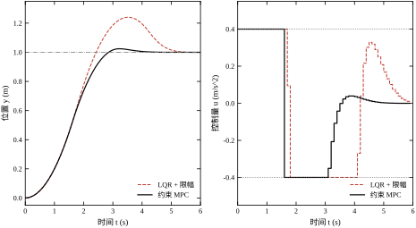
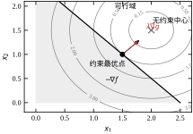
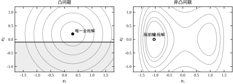
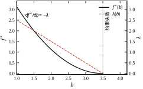
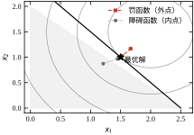
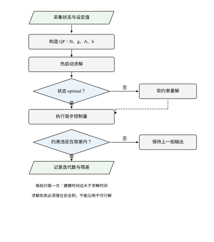

考虑一个行程 1 m 的直线伺服轴。把它简化成双积分对象，采样周期 T_s=0.1 s：
x_{k+1}=\begin{bmatrix}1 & T_s\\ 0 & 1\end{bmatrix}x_k+\begin{bmatrix}T_s^2/2\\ T_s\end{bmatrix}u_k \tag{30-1}
其中 x=[\,y\ \ v\,]^{\mathsf T} 是位置与速度，u 是加速度指令。设计者按线性二次型最优控制（第 55 章）选权重 Q=\mathrm{diag}(10,1)、R=0.1，得到状态反馈 u=-K(x-x_{\mathrm{ref}})。这套设计在数学上无懈可击：闭环极点稳定，代价函数取到最小。
问题出在物理侧。加速度受电机转矩与结构强度限制，实际只能给到 |u|\le 0.4\ \mathrm{m/s^2}。把限幅硬加在 LQR 输出后面，闭环仍然稳定，但性能变了：位置超调 24.06%，2% 调节时间 5.00 s。而如果从设计阶段就把 |u|\le 0.4 作为约束写进优化问题，用同样的 Q、R、同样的预测时域 N=20，超调降到 2.42%，调节时间 3.50 s，整段轨迹的累计二次代价从 138.59 降到 130.87——下降了 5.6%。两条响应曲线画在图 30-1 的左图，控制量在右图。

右图说明了差别从哪里来。两条控制量曲线都顶在 \pm0.4 上，幅值完全一样，区别在什么时候退出饱和。限幅 LQR 是“先冲、撞墙、再纠”，它在饱和期间仍然按无约束律计算反馈，相当于对已经饱和的执行器继续“要”更大的力；约束 MPC 在每一拍都把“接下来 20 步的限幅”一起考虑，提前减速。前者是事后裁剪，后者是事前规划。
这个例子给出本章的第一个判断：约束不是给无约束解加一个“封顶”，而是改变了整个问题的解。 把解算出来再裁剪，得到的是一个可行但非最优的点；把约束放进问题里解，得到的是约束下的最优解。两者的差距在温和约束下很小，在约束紧的时候可以到一个数量级。
第二个判断藏在数字里：超调从 24.06% 降到 2.42%，代价函数只降了 5.6%。原因是二次代价对大误差不敏感——超调那一小段在整段轨迹里占比不高。这说明用代价函数的小幅改善换时域指标的显著改善是划算的，但也说明不能只看代价函数的第四位小数来判断设计好坏。
有人会问：既然问题出在饱和，用抗饱和（anti-windup）补偿不就行了吗？不行，两者解决的不是同一个问题。抗饱和处理的是积分器在饱和期间的累积，它让控制器“不要记住那些没能执行的指令”；而这里的 LQR 没有积分器，问题也不是累积，而是制动时机。抗饱和能让退饱和更平滑，但它无法让控制器提前知道“再加速就会冲过头”。换句话说，抗饱和是对已发生的饱和做补救，约束优化是对将要发生的饱和做规划。前者修正历史，后者预判未来。
控制工程里的约束有四类来源，处理方式完全不同。
物理约束来自执行器和对象本身：电机转矩上限、阀门开度 0–100%、液压缸行程、温度上限。这类约束在任何工况下都不能违反，违反就是设备损坏。它们的数学形式通常是箱约束 u_{\min}\le u\le u_{\max}，处理起来最便宜。
工艺约束来自生产要求：升温速率不得超过某值以免材料开裂、进料配比必须保持在反应区间、两个执行器不能同时大幅动作。这类约束是“软”的——偶尔违反一次不会立刻出事，但会影响质量。它们适合用软约束处理，代价是引入松弛变量。
安全约束来自人身与设备保护：联锁、超速保护、紧急停车。这类约束不应该交给优化器，因为优化器可能返回不可行或失败，安全功能必须独立于优化层存在（第 36 章功能安全）。把安全约束写进 QP 是常见的设计错误。
性能约束来自设计指标：相位裕度不低于 45°、灵敏度峰值不超过 2、超调不超过 10%。这类约束不出现在运行时的优化里，而是出现在设计阶段的参数整定中，作为优化问题的约束条件。§30.6 的最后一个实验就是这种用法。
还有一类约束容易被漏掉，值得单独说：速率约束。执行器不只是“最多能给多少”，还有“多快能变过去”——阀门的行程时间、电机的电流上升率、加热器的升温速率。数学形式是 |\Delta u_k|=|u_k-u_{k-1}|\le\Delta u_{\max}，它把相邻两拍的决策变量耦合在一起。漏掉速率约束的后果很典型：优化器会算出一步跳变的理想输入，执行器跟不上，实际轨迹与预测轨迹逐渐分离，模型越准反而偏得越多。加上速率约束后，u 的可行域不再是逐点的箱约束，而是一条“斜坡带状”的耦合区域，问题的规模与条件数都会变化。
约束的数量也值得提前有个数量级概念。一个 N 步、状态 n 维、输入 m 维的 MPC，若状态与输入都加箱约束，不等式约束就有 2N(n+m) 条；N=20、n=4、m=2 时是 240 条。这些约束并不会让求解时间线性膨胀——大多数在最优解处不积极——但它们决定了矩阵的稀疏结构与内存占用，这一点在 §30.4.2 会具体看到。
这四类约束的区别在于“违反了谁承担后果”。物理约束违反是硬件损坏，安全约束违反是事故，工艺约束违反是质量偏差，性能约束违反是验收不合格。承担后果的主体不同，就应该用不同的机制，不能全部塞进一个 QP。
反例一：把约束当裁剪，得到的是可行解而不是最优解。 在 §30.1.1 的例子里，限幅 LQR 的每一步都满足 |u|\le0.4，所以它是可行的，但它不是最优的。用累计代价衡量，它比约束 MPC 高 5.6%；用超调衡量，它高 21.6 个百分点。可行性与最优性是两个独立的性质，工程上经常只检查前者。
反例二：罚因子取得不够大，解停在可行域外面。 用二次罚函数处理 x_1+x_2\le2.5，罚因子 \rho=1 时约束违反 0.333，\rho=10 时 0.0476，\rho=100 时 0.00498。违反量按 1/\rho 下降，要压到 10^{-6} 需要 \rho=10^{5}。而 \rho 越大，罚函数的 Hessian 条件数越差，内层无约束优化的收敛越慢。这就是外点法的固有矛盾：精度靠大罚因子，数值稳定性要求小罚因子。
反例三：硬约束遇到不可行输入，求解器直接罢工。 给 §30.1.1 的对象加终端约束 x_N=x_{\mathrm{ref}}，同时把限幅压到 |u|\le0.3。10 步内最大位移只有 0.5T_s^2u_{\max}N^2=0.150 m，从原点出发根本到不了 1 m。硬约束 QP 返回 infeasible，控制器这一拍没有输出。改成软约束后，求解器返回 optimal，松弛量 0.85，即“尽量靠近、差 0.85 m”。不可行不是数值问题，是建模问题：必须事先规定不可行时怎么办。
反例四：把非凸问题当凸问题解，拿到的是局部最优。 设输入需要避开某个共振转速区间，可行集是 u\in[0,0.2]\cup[0.5,1]——两个不相连的区间。这个集合不是凸的，从 u=0.6 出发的梯度法会停在 0.5 附近，从 u=0.1 出发会停在 0.2 附近，两个解的代价可能相差数倍。更隐蔽的情形是双线性项：目标里出现 u_1u_2（例如功率等于电压乘电流），Hessian 不定，凸优化的一切保证全部失效。判断凸性不是学术洁癖，它决定了“求出的解能不能信”。
把上面的场景抽象出来，工程上要回答五个问题，本章逐个给工具。
这五个问题的顺序不能颠倒。第 3 问决定后面所有结论是否成立：如果问题非凸，第 1 问的 KKT 条件只是必要条件，第 2 问的影子价格只是局部信息。第 4 问决定能不能上线：一个 5 ms 的 QP 放进 10 ms 的采样周期是可行的，放进 1 ms 的周期就必须换显式 MPC（第 58 章）。
这五个问题看起来要分五次回答，实际上可以由一次求解同时给出。求解器返回的不只是 x^\star：乘子回答了第 1、2 问，求解状态与残差回答了第 3 问的“解是否可信”，迭代次数与耗时回答第 4 问，状态码回答第 5 问。工程上真正缺的不是算法，而是把这些附带信息读出来并记录下来的习惯。 只取 u_0、把其余全部丢弃的写法，等于把仪表盘拆了只留油门。
这也解释了为什么本章要花篇幅讲乘子与残差，而不是直接给一段 cvxpy.solve() 的代码。会调库的人很多，能从返回值里诊断问题的人很少，而后者才是把优化用稳的关键。
如果只能记住一句话：约束优化的价值不在于“加个上限”，而在于把边界写进问题、用乘子读出边界的价格、用凸性保证解的可信度。
本章按“定义—推导—离散—边界—验证”推进。§30.2 给出标准形式、凸集与凸函数的判据、LP/QP/SOCP/SDP 的分层；§30.3 推导拉格朗日乘子、KKT 条件、对偶与影子价格，再讲罚函数、障碍函数、SQP 三条求解路线；§30.4 把连续问题落到离散 QP，给出 MPC 的标准构造、求解器选择与计算量实测；§30.5 给出工程边界：什么时候不该用优化、实时性怎么保证、不可行怎么兜底；§30.6 用七组实验逐条验证前面的结论；§30.7 收束为一份错误清单。
不同读者的路径：做产线调试的，读 §30.1、§30.3.4、§30.5；做 MPC 实现的，读 §30.2、§30.3.5、§30.4 全部；做控制器参数整定的，读 §30.3.2、§30.6.7，之后接第 44 章。三条路径的共同落点是 §30.6 的脚本，不跑一遍，乘子和影子价格都只是符号。
本章讨论的问题统一写成
\begin{aligned} \min_{x\in\mathbb{R}^n}\quad & f(x)\\ \text{s.t.}\quad & g_i(x)\le 0,\quad i=1,\dots,m\\ & h_j(x)=0,\quad j=1,\dots,p \end{aligned} \tag{30-2}
其中 f 是目标，g_i 是不等式约束，h_j 是等式约束。满足全部约束的点构成可行域 \mathcal{F}；若 \mathcal{F} 非空，称问题可行。x^\star 是全局最优解，指对任意 x\in\mathcal{F} 都有 f(x^\star)\le f(x)；若只在其某个邻域内成立，则称局部最优解。
等式约束在控制问题里通常来自模型：状态方程 x_{k+1}=Ax_k+Bu_k 经过消元后变成变量之间的线性关系，可以完全消去，也可以保留为等式约束。保留的好处是保持问题的稀疏结构，坏处是变量变多。工程实现几乎总是保留——稀疏性对求解速度的贡献远大于变量维数带来的负担。
积极约束是理解约束优化的钥匙。若 g_i(x^\star)=0，称该约束在最优点积极（active）；若 g_i(x^\star)<0，称其不积极（inactive）。不积极约束对解没有影响，把它删掉解不变；积极约束决定了最优解的位置。图 30-2 画出了本章反复使用的二维例子：
\min_{x}\ (x_1-2)^2+(x_2-1.5)^2\quad \text{s.t.}\quad x_1+x_2\le 2.5,\ x_1\ge0,\ x_2\ge0 \tag{30-3}

无约束最优点是 (2,1.5)，落在可行域外。约束最优点沿目标函数梯度方向投影到边界上，为 (1.5,1)，此时 x_1+x_2=2.5 积极，两个非负约束不积极。最优值 f^\star=0.5。在最优点的两条箭头分别是负梯度 -\nabla f 与约束外法向 \nabla g，两者方向相反、共线——这就是 KKT 条件的几何原型，§30.3.2 会把它写成公式。
这个例子还说明一件事：约束最优点不一定在可行域的“角”上。 角点（顶点）是线性规划的特征，二次目标的最优点通常落在边界的光滑段内。把“最优解一定在顶点”的经验从线性规划搬到二次规划，是常见的错误。
可行域的形状决定了很多后续性质。线性约束的可行域是多面体：有限个半空间的交，边界由平面片拼成，顶点数是有限个。MPC 的可行域正是多面体，因为状态方程经过消元后，全部约束都变成 U 的线性不等式。多面体的好处是可以用顶点枚举、有效集法这类组合式算法；坏处是顶点数随维数指数增长，n 个变量、m 条约束的顶点数上界是 \binom{m}{n}，所以高维时不能靠枚举。
非线性约束的可行域是曲面围成的区域，边界光滑但没有“顶点”概念。此时“投影”的几何意义更清楚：最优点是从无约束最优点沿某个度量向可行域投影的落点。度量由目标函数的 Hessian 决定——二次目标的等高线是椭圆，投影方向不是欧氏最短方向，而是沿椭圆法向的方向。这解释了为什么加权矩阵 Q 改变的不只是“重视哪个状态”，还改变了“往哪个方向退”。
对于带等式约束的问题，几何图像还要再降一维：可行域是仿射子空间与半空间的交，最优性条件变成“负梯度落在等式约束张成的子空间与积极不等式法锥之和里”。这句话就是 KKT 条件的几何版，§30.3.2 会把它写成代数式。
凸集：若对任意 x,y\in\mathcal{C} 与 \theta\in[0,1]，都有 \theta x+(1-\theta)y\in\mathcal{C}，则 \mathcal{C} 是凸集。几何上就是“集合内任意两点的连线不跑到集合外”。半空间 \{x\mid a^{\mathsf T}x\le b\}、多面体、球、椭球、正半定锥都是凸集；整数格点集、并集、圆环不是。
凸函数：定义在凸集上的 f 若满足
f(\theta x+(1-\theta)y)\le \theta f(x)+(1-\theta)f(y) \tag{30-4}
则称 f 凸。这个定义不好用，实际判据是两条：
一阶判据（可微时）：f(y)\ge f(x)+\nabla f(x)^{\mathsf T}(y-x)，即函数始终在其任一点的切平面上方。
二阶判据（二阶可微时）：\nabla^2 f(x)\succeq 0，Hessian 半正定。
二次函数 f(x)=\tfrac12x^{\mathsf T}Px+q^{\mathsf T}x+r 凸的充要条件是 P\succeq0。这一条在控制里极其常用：MPC 的代价函数是二次型，权重矩阵半正定，问题自动是凸的。反过来，只要权重矩阵出现负特征值（比如为了让某个方向“越快越好”而设了负权重），问题立刻非凸，求解器给出的解不能信。
保凸运算决定了工程上能拼装出多复杂的问题。非负加权和保凸；逐点最大值保凸；复合 f(Ax+b) 保凸；凸函数的非降凸复合保凸。这些规则可以组合，于是“分段二次代价”“最大偏差”“多目标加权”都能保持凸性。但凸函数之差不保凸——这就是为什么“收益减去风险”型的目标经常非凸。
集合侧也有对应的运算规则，而且更常被用到。任意多个凸集的交仍是凸集，所以把一条条约束叠起来不会破坏凸性；凸集的仿射像与原像仍是凸集，所以变量替换 z=Tx 是安全的；凸集的并通常不是凸集，这正是反例四中“绕开共振区”的问题所在——两个不相连的区间，各自是凸的，并起来就不是。工程上的补救办法是把并集松弛成它的凸包（把中间那段也允许），或者在离散变量上做枚举。
还有一条实践中的判据常被忽略：凸性要在“消元前”和“消元后”都检查一遍。有些问题在原变量下非凸，但消去一部分变量后变凸；反过来也有——消元时若引入了非凸关系（例如把 u^2 代换成一个新变量而忘记加锥约束），表面上成了线性问题，实际解出来的点不在原来的集合里。后者是 MPC 实现里最隐蔽的一类错误，表现为“求解器说最优，仿真却偏离模型”。
凸优化的核心定理只有一句：凸问题的任一局部最优解都是全局最优解。证明用反证：若局部最优 x^\star 不是全局最优，存在 y 使 f(y)<f(x^\star)，沿线段取靠近 x^\star 的点，凸性给出该点目标值严格小于 f(x^\star)，与局部最优矛盾。
这条定理的工程含义是：求解器返回 optimal 时，你拿到的就是全局最好，不需要换初值重试，不需要担心“掉进局部坑”。对非凸问题，同样的 optimal 只说明“在这个初值附近收敛到了一个驻点”，换一个初值可能得到更好的解。

图 30-3 的右图是一个非凸例子：f(x_1,x_2)=(x_1^2-1)^2+0.35x_1+x_2^2。两个局部极小点分居 x_1=\pm1 附近，左侧的目标值更低。从右侧初值出发的梯度法会停在局部解上，而且它满足 KKT 条件——KKT 条件不能区分局部与全局。这就是为什么“求解器说收敛了”不等于“答案对”。
控制问题的凸性需要逐项检查，常见的三种非凸来源是：一是动力学含非线性（如 \dot x=f(x,u) 中的三角函数），二是约束含耦合（如 u_1u_2\le c），三是目标含稀疏诱导项的组合（如 \ell_0 范数）。前两种的正规做法是线性化或凸松弛（第 58、80 章），第三种用 \ell_1 松弛替代（第 31 章）。如果三者都不成立，就必须接受“局部最优”，并用多初值、热启动、后验校验来降低风险。
检查可以按固定顺序走，三步就能定性。
第一步，看变量域。 变量是否被限制在整数、离散档位、两个不相连的区间上？若是，问题不是凸的，除非能证明松弛后最优解恰好落在原集合内（这在全幺模结构下偶尔成立，不能指望）。
第二步，看目标。 把目标写成标准二次型，取出 Hessian，检查最小特征值。工程代码里更省事的做法是跑一次 Cholesky 分解：能分解则半正定，报“矩阵非正定”就说明有负特征值。注意权重矩阵的条件数：最小特征值 10^{-6}、最大 10^{8} 时，数值上等价于奇异，求解器可能报 optimal_inaccurate，此时应先缩放再判断凸性。
第三步，看约束。 每条约束单独看是否凸（\le 号左边是凸函数，等式约束左边是仿射），然后看它们是否只通过“交”组合。若出现“或”、若出现两个变量的乘积、若出现范数在 \ge 号左边，就要停下来。
三步全过，才可以放心使用凸优化的一切结论；任何一步不过，都要在文档里写明“局部最优”并按非凸处理。这个检查花不了几分钟，但能避免后面几个月的返工。
同样是“凸”，不同问题类的求解代价差好几个数量级。识别问题属于哪一层，直接决定选什么求解器、能不能满足实时性。
表 30-1 凸优化的问题分层与典型求解器
| 类型 | 目标 | 约束 | 典型规模 | 常用求解器 |
|---|---|---|---|---|
| LP | 线性 | 线性 | 10^5 变量 | HiGHS、Gurobi、GLPK |
| QP | 二次（P\succeq0） | 线性 | 10^2–10^4 | OSQP、qpOASES、DAQP |
| QCQP | 二次 | 二次（凸） | 10^2 | ECOS、Clarabel |
| SOCP | 线性 | 二阶锥 | 10^3 | ECOS、Mosek、Clarabel |
| SDP | 线性 | 半正定锥 | 10^2 | Mosek、SCS、CVXOPT |
这张表要横着读：越往下，能表达的东西越多，单次求解越贵。控制里的多数在线问题落在 QP 这一行——状态方程线性、代价二次、约束是箱约束或线性不等式，正好是 QP 的形状。只有在处理鲁棒约束、机会约束、矩阵不等式时才需要上升到 SOCP 或 SDP，而那些场合通常离线求解或低频更新。
“越往下越贵”的量级感值得具体化。内点法解 LP、QP、SOCP 的迭代次数通常在 20–50 次之间，与问题规模关系不大；单次迭代的代价是 O(n^3) 量级（稠密矩阵分解），稀疏结构好时可以降到近线性。SDP 的单次迭代代价是 O(n^6)，因为每个 n\times n 矩阵变量在锥投影时要算特征分解。把这两条放在一起：一个 n=100 的 QP，内点法约 100^3\times30\approx3\times10^7 次浮点运算，毫秒级；同样规模的 SDP，100^6 已经不可接受。规模上限的差别不是常数因子，而是幂次。
分层的边界也不是绝对的。QCQP 可以改写成 SOCP（把二次约束写成范数约束），从而用更成熟的锥求解器；QP 可以看成 SOCP 的特例，但没必要绕这一圈。反过来，某些看似 SOCP 的问题（例如带椭球不确定集的鲁棒约束）经过对偶化简后可以变回 QP，这一步化简往往能把求解时间降一个数量级。先化简、再定层、最后选求解器，顺序不能颠倒。
LP 与 QP 的求解器内部还有两条路线，值得知道区别。单纯形法沿着可行域的顶点走，每步换一个顶点，理论最坏是指数时间，实测很快，且天然支持热启动与灵敏度分析；内点法从可行域内部穿过去，多项式时间，但每步要分解矩阵。工程上 LP 多用单纯形（HiGHS 的默认策略是两者混合），QP 多用内点或一阶方法。选型时若需要“改一个参数后快速重解”，单纯形与有效集法的增量更新能力比内点法更合适。
二次规划（QP） 是本章的主角，标准形式为
\min_{z}\ \tfrac12 z^{\mathsf T}Hz+g^{\mathsf T}z\quad \text{s.t.}\quad Az\le b,\quad A_{\mathrm{eq}}z=b_{\mathrm{eq}} \tag{30-5}
其中 H\succeq0。若 H\succ0，问题有唯一解；若 H 奇异，解可能不唯一，但最优值仍唯一。工程上建议加一个很小的正则项 \epsilon I（\epsilon 取 10^{-8} 量级）来消除奇异，代价是最优解偏移 \epsilon 量级，可以接受。
半正定规划（SDP） 的约束形如 F_0+\sum_i z_iF_i\succeq0。控制里的 LMI（第 65 章）就是 SDP。它不能直接写成向量形式的不等式，必须靠专门的锥求解器。SDP 的规模通常受限于矩阵维数：n\times n 的矩阵不等式，变量数 O(n^2)，单次迭代 O(n^6)，所以 n 超过几百就基本离线算。
二阶锥规划（SOCP） 介于两者之间，约束形如 \|A_iz+b_i\|_2\le c_i^{\mathsf T}z+d_i。它常出现在“鲁棒 MPC”里：把不确定集合上的最坏情况约束转化为范数约束。相比 SDP，SOCP 的代价低一个量级，是工程上更现实的选择。
其一，MPC 的滚动优化。 给定离散模型 x_{k+1}=Ax_k+Bu_k，预测时域 N，把未来 N 步的输入堆成决策变量 U=[u_0;\dots;u_{N-1}]，状态可以显式消去：
X=\mathcal{A}x_0+\mathcal{B}U,\quad \mathcal{A}=\begin{bmatrix}A\\A^2\\\vdots\\A^N\end{bmatrix},\quad \mathcal{B}=\begin{bmatrix}B&0&\cdots&0\\ AB&B&\cdots&0\\ \vdots&&\ddots&\vdots\\ A^{N-1}B&\cdots&AB&B\end{bmatrix} \tag{30-6}
代价写成 J=\tfrac12U^{\mathsf T}HU+g^{\mathsf T}U+\text{常数}，其中 H=\mathcal{B}^{\mathsf T}\bar Q\mathcal{B}+\bar R，g=\mathcal{B}^{\mathsf T}\bar Q\mathcal{A}x_0。约束 |u_k|\le u_{\max} 直接作用在 U 上，状态约束 x_{\min}\le x_k\le x_{\max} 变成 \mathcal{A}x_0+\mathcal{B}U 的线性不等式。于是滚动优化就是一个标准 QP，规模为 n_uN 个变量、约 (2n_u+2n_x)N 个不等式。§30.4.1 给出完整代码。
这里有两个细节决定 QP 是否“好解”。第一，H 必须正定，而 H 的正定性来自 \bar R\succ0——若输入权重取零，H 只在 \mathcal{B} 的像空间上正定，问题可能出现多解，一阶方法会来回振荡。所以 R 不能设为零，哪怕很小（10^{-4} 量级）也要留。第二，H 的条件数由 Q 与 R 的比值决定，位置权重 10、输入权重 0.1，比值 10^2，条件数尚可；若位置权重 10^4、输入权重 10^{-3}，条件数到 10^7，迭代次数会翻几倍。这就是 §30.4.3 要讲的缩放问题。
终端代价 P 的作用不只是“让末端更准”。取 P 为离散 Riccati 方程的解时，滚动优化等价于一个无限时域的 LQR，闭环有稳定性证明；取 P=0 时，有限时域的 MPC 可能为了末端代价而“透支”，出现短视行为。工程上算 P 只要一行 scipy.linalg.solve_discrete_are，代价远小于它带来的稳定性保证。
其二，带鲁棒性约束的参数整定。 求 (K_p,K_i) 使 IAE 最小，同时满足相位裕度 \ge45^\circ、灵敏度峰值 \le2。后两个条件不是对 (K_p,K_i) 的显式代数约束，而是“对每个频率都成立”的半无限约束：
\angle L(\mathrm{j}\omega;K_p,K_i)+180^\circ\ge45^\circ,\quad \left|\frac{1}{1+L(\mathrm{j}\omega;K_p,K_i)}\right|\le2,\quad \forall\omega \tag{30-7}
工程做法是在对数频率轴上取 10^3–10^4 个采样点，把半无限约束离散成有限个不等式，再用 SQP 或内点法求解。取点密度决定约束的保守程度：点太稀，两个采样点之间可能违反；点太密，约束数超过变量数几个数量级，求解变慢。经验做法是先粗网格求解，再在最优点附近加密复核。
其三，H∞ 与 LMI。 把“闭环增益小于 \gamma”写成矩阵不等式，用 Schur 补把它转成线性矩阵不等式：
\begin{bmatrix}A^{\mathsf T}P+PA+Q & PB\\ B^{\mathsf T}P & -R\end{bmatrix}\prec0 \quad\Longleftrightarrow\quad A^{\mathsf T}P+PA+Q+PB R^{-1}B^{\mathsf T}P\prec0 \tag{30-8}
左边对 P 是线性的，于是“求 P\succ0 使不等式成立”就是 SDP。Schur 补的价值在于：它把带逆矩阵的 Riccati 型不等式变成了线性矩阵不等式，而后者有成熟的锥求解器。
其四，稀疏与分组。 有时目标里带 \|u\|_1 或分组稀疏项，用来挑选执行器或简化控制器。\ell_1 范数可以写成线性约束：\|u\|_1\le t 等价于 -t\mathbf{1}\le u\le t\mathbf{1} 加上对 t 的优化，仍然是 LP 或 QP。\ell_0 范数不行，只能松弛。
约束优化的另一半理论在对偶侧。定义拉格朗日函数
L(x,\lambda,\nu)=f(x)+\sum_{i=1}^{m}\lambda_i g_i(x)+\sum_{j=1}^{p}\nu_j h_j(x) \tag{30-9}
其中 \lambda_i\ge0 是不等式乘子，\nu_j 是等式乘子。对固定的 (\lambda,\nu)，L 对 x 取下确界得到对偶函数 d(\lambda,\nu)=\inf_x L(x,\lambda,\nu)。对偶函数永远是凹的，哪怕原问题非凸——因为它是一族仿射函数的下确界。
对偶问题是
\max_{\lambda\ge0,\ \nu}\ d(\lambda,\nu) \tag{30-10}
弱对偶成立：d(\lambda,\nu)\le f(x^\star) 对任意可行 (\lambda,\nu) 与最优 x^\star 都成立。两者之差叫对偶间隙。强对偶指间隙为零，此时对偶最优值等于原问题最优值。
强对偶需要条件。对凸问题，Slater 条件是充分条件：存在一个严格可行的点，即所有不等式约束严格满足（g_i(x)<0）且等式约束满足。线性约束的问题（LP、QP）只要可行，Slater 条件通常自动成立或可用弱化版本。非凸问题即使满足 Slater 条件也不能保证强对偶——凸性是前提。
弱对偶的证明只有两行，值得亲手写一遍。设 x 可行、\lambda\ge0，则 \lambda_i g_i(x)\le0、\nu_jh_j(x)=0，于是 L(x,\lambda,\nu)\le f(x)；又因 d(\lambda,\nu)=\inf_xL\le L(x,\lambda,\nu)，合起来就是 d(\lambda,\nu)\le f(x)。这个不等式对任意可行点成立，因此对最优值也成立。 它给出的不是等式，而是一个可以随时计算的“下界”：任何一组 \lambda\ge0 都能报出一个不超过最优值的数，而任何可行解都能报出一个不低于最优值的数，两者夹出的区间就是当前解的质量证明。
这个性质的工程价值在停止准则上。一阶方法迭代到第 k 步时，原始残差给出“离可行有多远”，对偶残差给出“下界离当前目标有多远”，两者之和就是间隙的估计。不需要知道最优值，就能判断该不该继续迭代。 这也是 OSQP 的停止准则能自适应调整的原因：它把间隙按目标函数的量级归一化，要求相对精度而不是绝对精度。
不可行时，对偶侧给出的东西更有用。Farkas 引理说明：原问题不可行，当且仅当存在一组非负乘子使某个线性组合恒为负。求解器返回的这组乘子就是不可行证书，它指出哪几条约束互相冲突。证书不是“更详细的错误信息”，而是可验证的数学对象——把它代回约束，能逐条确认冲突确实存在。§30.5.2 推荐 SCS 与 Clarabel，原因就在这里。
互补松弛 \lambda_ig_i(x^\star)=0 还有一种经济学的读法：约束是“配额”，乘子是“配额的影子价格”，最优时要么配额没用完（g_i<0，价格为零），要么配额用满且价格为正。不会出现“配额没用完却还要付费”的情形，也不该出现“配额用满却免费”的浪费。工程上看到“约束积极但乘子为零”，通常意味着问题退化（例如两条约束重复），需要检查约束是否有冗余。
对偶的工程价值有两层。第一层是证书：任何可行 x 与任何 \lambda\ge0 都给出上下界，两者之差就是“当前解离最优还有多远”，不需要知道最优值。第二层是价格：对偶变量就是约束的影子价格，它告诉设计者“把这条约束放松一个单位，目标能改善多少”。§30.3.4 会用实验把这件事量化到 10^{-13} 的精度。
需要提醒的是，对偶间隙为零不代表原问题好解。有些凸问题的对偶间隙为零但原问题的最优点取不到（只在极限意义下达到），工程上表现为求解器迭代到最大步数仍报 optimal_inaccurate。这时要看原始残差与对偶残差，而不是只看状态字符串。
对偶还有一层“机制设计”的用途，在能源与过程工业里很常见。多个子系统共享一条容量约束时，把容量约束的对偶变量当作“内部价格”下发给各子系统，各自按价格优化自己的目标，汇总后再更新价格——这就是对偶分解。它的好处是不需要把全部变量塞进一个求解器，通信量小、可并行；代价是收敛需要多轮，且每轮都要解一个子问题。对采样周期在秒级的调度问题，这个代价可以接受；对毫秒级的伺服控制就不合适。
先看等式约束。求 f(x) 在 h(x)=0 上的极小，若最优点处 \nabla h\ne0，则 -\nabla f 必须与 \nabla h 共线，否则沿约束曲面切向移动还能降低目标。写成公式就是
\nabla f(x^\star)+\nu\nabla h(x^\star)=0 \tag{30-11}
\nu 就是乘子。它不是“为了凑公式引入的辅助量”，而是目标梯度在约束法向上的分量大小。这个解释对不等式也成立：只要约束积极，-\nabla f 必须落在积极约束法向生成的锥内，否则可以沿可行方向继续下降。
用二维例子验证。在 x^\star=(1.5,1) 处，\nabla f=2(x^\star-c)=(-1,-1)，\nabla g=(1,1)，于是 \lambda=1。乘子为正，说明约束“顶住”了解；若算出负乘子，说明该约束不该积极，解不在这个面上。
乘子还有一层灵敏度含义。考虑扰动后的问题 \min f(x) s.t. g(x)\le b，最优值记为 f^\star(b)。在强对偶与可微的条件下，
\frac{\mathrm{d}f^\star}{\mathrm{d}b}=-\lambda^\star \tag{30-12}
即乘子等于“放松一单位约束所换来的目标改善”的相反数。这个结论的推导只需对 L(x^\star,\lambda^\star,b)=f(x^\star)+\lambda^\star(g(x^\star)-b) 关于 b 求导，并利用 g(x^\star)=b 与包络定理。它把抽象的乘子变成了可报价的量，§30.3.4 会给出实测验证。
不等式约束的乘子为什么必须非负？用一维例子看得最清楚。\min x s.t. x\ge1，写成标准形式 g(x)=1-x\le0。最优点是 x^\star=1，\nabla f=1，\nabla g=-1，平稳性给出 1-\lambda=0，\lambda=1>0。若把约束方向写反成 x\le1，同样的推导会给出 \lambda=-1，这是不可能的——因为 x^\star=0 根本不满足约束。乘子为负，说明解的符号或约束方向至少有一个写错了，这是调试时最快的自检。
多个约束同时积极时，乘子的含义要从“共线”升级为“落在锥内”：-\nabla f 必须是积极约束梯度的非负组合。几何上，可行方向构成一个锥（临界锥），负梯度必须落在这个锥的对偶锥里。这一步升级解释了一件事：为什么两个积极约束的乘子不能单独解读。 它们是一组权重，只有相对大小有意义；把其中一个乘子单独拿出来说“这条约束值 3.2 元”，必须注明其余积极约束是哪些。
乘子还有一个尺度不变性值得记住：若把目标整体乘以 c，所有乘子也乘以 c，最优解不变。所以报乘子时必须同时报目标的量纲与量级。工程上更稳妥的做法是报归一化乘子——用目标值的相对变化（例如 |\Delta f|/f^\star）来表达放松约束的收益，这样跨工况、跨项目都能比较。
把等式与不等式放在一起，最优点满足四个条件：
\begin{aligned} &\text{平稳性：} && \nabla f(x^\star)+\sum_i\lambda_i\nabla g_i(x^\star)+\sum_j\nu_j\nabla h_j(x^\star)=0\\ &\text{原始可行：} && g_i(x^\star)\le0,\quad h_j(x^\star)=0\\ &\text{对偶可行：} && \lambda_i\ge0\\ &\text{互补松弛：} && \lambda_i g_i(x^\star)=0,\quad i=1,\dots,m \end{aligned} \tag{30-13}
互补松弛是这组条件里最有用的一条。它说：\lambda_i 与 g_i(x^\star) 至少有一个为零。于是每条约束只有两种状态——不积极且乘子为零（对解没有影响），或者积极且乘子非负（正在限制解）。一个约束不可能既不积极又有正乘子，也不可能积极而乘子为零（退化情形除外）。
这条性质直接给出了诊断方法：求解完成后读乘子，乘子为 0 的约束可以删掉，乘子最大的约束是当前最“贵”的瓶颈。工程上据此判断“该放宽哪条限制”——放宽乘子最大的那条，收益最大。
用一个三条约束的例子把四种状态走一遍。仍取 §30.2.1 的二维问题，把右端改为 b=1：最优点是 (0.75,0.25)，x_1+x_2=1 积极、\lambda_1=2.5>0；两条非负约束不积极、乘子为零。此时 f^\star=3.125。若进一步把 b 压到 0.5，最优点变成 (0.5,0)，和约束与非负约束 x_2\ge0 同时积极，两个乘子分别是 3 与 0——因为 x_2 顶在零上但没有任何力想把它推到负值，它只是“跟着和约束走”。积极但乘子为零的情形就这样出现了，它不违反互补松弛，但提示问题在这一段进入了退化区间。
KKT 条件成立还需要一个前提，通常写作 LICQ：所有积极约束的梯度线性无关。若两条约束是同一个平面（重复约束），或三个约束的梯度共面，乘子就不唯一，求解器给出的乘子依赖于内部的数值路径，跨平台可能不同。工程上的处理是上线前先去冗余：用数值秩检查约束矩阵，把线性相关的行删掉。这一步不做，乘子的解读就会时对时错。
KKT 条件的地位需要说清楚。对凸问题，KKT 是充要条件：满足 KKT 的点就是全局最优。对非凸问题，KKT 只是必要条件：满足 KKT 的点可能是局部极小、局部极大，也可能是鞍点。所以看到求解器报 optimal 且 KKT 残差很小，只能说明“找到了一个驻点”，不能说明“找到了最好的驻点”。
§30.6 的第一个实验用 CVXPY 解二维例子，数值解 (1.500000,1.000000) 与解析解偏差 1.11\times10^{-16}，乘子 1.000000，四项 KKT 残差分别是平稳性 2.22\times10^{-16}、原始可行 0、对偶可行 0、互补松弛 0。这组数字说明：对良态的凸 QP，KKT 残差可以做到机器精度，不存在“优化器只能给近似解”的问题——近似只发生在非凸、病态或大规模问题上。
KKT 是一阶条件，它管“梯度对不对”，不管“曲率够不够”。对积极约束集合 \mathcal{A}(x^\star)，定义临界锥
\mathcal{C}=\left\{d\ \middle|\ \nabla g_i(x^\star)^{\mathsf T}d=0,\ i\in\mathcal{A};\ \nabla g_i(x^\star)^{\mathsf T}d\le0,\ i\in\mathcal{A}_{\mathrm{ineq}}\right\} \tag{30-14}
二阶充分条件是：对任意非零 d\in\mathcal{C}，都有 d^{\mathsf T}\nabla_{xx}^2L(x^\star,\lambda^\star)d>0。直观地说，沿着所有“可行且不破坏积极约束”的方向，拉格朗日函数的曲率必须为正。
这条条件在工程上对应一个常见现象：目标函数在最优点附近太平。如果二阶条件只是勉强成立（曲率接近零），求解器会在最优点附近反复迭代，返回的解对数据扰动敏感。表现是同一个问题连续解两次，结果在小数点后第三位就开始不同。遇到这种情况，要么加正则项抬高曲率，要么接受这个精度并检查它对下游的影响。
对严格凸的 QP（H\succ0），二阶条件自动成立，解唯一且连续依赖于数据。这就是为什么工程上偏爱 QP：唯一性保证了“同样的输入给同样的输出”，这对实时控制是硬要求。若 H 只是半正定（比如只惩罚位置不惩罚速度），解可能不唯一，两次求解给出不同的控制量，闭环出现抖动。
二阶条件失效有三种典型形态，处理方式各不相同。
形态一：曲率为零但梯度为零。 目标在某个方向上完全平坦（例如只惩罚位置误差、不惩罚速度误差，而速度又不进入任何约束），此时 H 奇异，最优解是一条直线上的任意点。求解器返回哪一个点取决于迭代路径。修法：加一个小的正则项 \epsilon I，或把被忽略的状态纳入代价。
形态二：曲率为负。 这说明当前点是鞍点而不是极小。非凸问题里常见，凸问题里只可能因为 Hessian 组装错误（例如把 -Q 写成了 Q）。修法：检查权重矩阵的符号，别急着调参。
形态三：临界锥为空。 所有方向都被积极约束堵死，此时二阶条件自动满足（没有可行方向可走），但解对约束的微小扰动极其敏感。表现是：约束右端变化 10^{-6}，最优解跳变。这不是数值问题，是问题本身在该点不可微。修法：把该点的约束软化，或接受“解在这一点不连续”并在上层加滤波。
这三种形态都指向同一个工程结论：二阶条件不是理论装饰，它决定了闭环里控制量会不会抖。 上线前做一次扰动测试——把约束右端抖动 10^{-6}，看控制量变化多少——比读任何理论都直接。
把 §30.3.1 的灵敏度公式用到二维例子上。约束右端从 b=2.5 开始增大，最优点沿约束线移动，直到 b=3.5 时无约束中心进入可行域，约束失效。分段解析解为
f^\star(b)=\begin{cases}\dfrac{(3.5-b)^2}{2}, & b<3.5\\[4pt] 0, & b\ge3.5\end{cases} \qquad \lambda^\star(b)=\begin{cases}3.5-b, & b<3.5\\ 0, & b\ge3.5\end{cases} \tag{30-15}
对 b 求导，\mathrm{d}f^\star/\mathrm{d}b=-(3.5-b)=-\lambda^\star，与式 (30-12) 一致。

图 30-5 把两条曲线画在一起：左轴是最优值，右轴是对偶变量。两件事值得注意。第一，f^\star(b) 是分段二次的，在 b=3.5 处导数从 -0 变为 0，拐点正好是约束失效的位置。第二，\lambda(b) 随 b 线性下降，越接近失效点越便宜——约束越松，放松它的边际收益越小，这与经济学的边际效用递减是同一件事。
数值验证用 251 个 b 采样点，用中心差分算斜率，与乘子比较，最大偏差 8.26\times10^{-14}。在 b=1.0 处，f^\star=3.125、\lambda=2.5、斜率 -2.495；在 b=2.5 处，f^\star=0.5、\lambda=1.0、斜率 -1.000。b=1 处的斜率偏差来自端点附近的差分格式，内部点的偏差在 10^{-14} 量级。
这个工具在现场怎么用？假设一个 MPC 的输入限幅是 |u|\le0.4，运行中读到的乘子是 \lambda=3.2，而另一个约束（比如速度上限）的乘子是 0.1。这说明前者的“价格”是后者的 32 倍：把加速度上限提高 0.1，累计代价能降约 0.32；把速度上限提高 0.1，只能降约 0.01。乘子把“该改哪个参数”从工程直觉变成了定量排序。
要注意乘子的量纲。\lambda 的量纲是“目标函数量纲除以约束量纲”。若目标用 IAE（秒），约束用加速度（\mathrm{m/s^2}），则 \lambda 的单位是 \mathrm{s^3/m}。跨约束比较乘子之前，必须把它们换算到同一量纲，否则比较没有意义。这也是为什么工程上报乘子时要同时报目标函数与约束的单位。
影子价格有三处会失效，必须知道边界。
其一，非凸问题只有局部价格。 在局部最优处算出的 \lambda 只描述“在这个坑里放松约束的收益”，换一个坑可能是另一个价格。若两个坑的目标值相差很大，局部价格会给出完全错误的投资建议。
其二，离散或整数变量下价格不连续。 约束右端从 2.49 变到 2.51，可能让一个整数变量跳变，最优值出现台阶。此时“斜率”不存在，只能用有限差分算平均价格，而且步长要选得比台阶宽度还大。
其三，约束失效点附近价格趋于零，但收益并未消失。 从图 30-5 看，b\to3.5^- 时 \lambda\to0，说明“再放松一点”几乎没用；但若一次放松很多（越过 3.5），收益会突然停止增长。价格是局部信息，不能外推。
正确的用法是做小步试探：把某条约束放松 1%，重解一次，看最优值改善多少，再决定是否继续。这个做法对凸问题与灵敏度分析给出同样的结论，但不需要读乘子，也不受非凸与离散的限制，代价只是多解一次。工程上两者可以互相校验：乘子预测的改善量与实测改善量一致，才说明模型可信。
最朴素的思路是把约束“罚”进目标，变成无约束问题：
\min_x\ F_\rho(x)=f(x)+\rho\sum_{i=1}^{m}\left[\max(0,g_i(x))\right]^2 \tag{30-16}
\rho 是罚因子。约束满足时罚项为零，违反时罚项按二次增长。这个方法叫外点法，因为迭代点从可行域外逐步逼近边界，最终停在边界外侧一点点。
外点法的收敛性有明确结论：当 \rho\to\infty 时，F_\rho 的极小点收敛到原问题最优解；约束违反量按 O(1/\rho) 下降。§30.6 的实测完全符合：\rho=1 时违反 0.333，\rho=10 时 0.0476，\rho=100 时 0.00498，\rho=10^{5} 时 5.0\times10^{-6}。每放大 10 倍罚因子，违反量降约 10 倍，非常规整。
代价在数值上。罚函数的 Hessian 是 \nabla^2f+2\rho\sum\nabla g\nabla g^{\mathsf T}，第二项的量级随 \rho 线性增长。\rho=10^{5} 时，Hessian 的条件数比 \rho=1 时高五个数量级。内层无约束优化（牛顿法或 BFGS）在这种条件下收敛极慢，而且舍入误差被放大。实测中 \rho 从 10^{4} 增到 10^{5}，违反量只从 5.0\times10^{-5} 降到 5.0\times10^{-6}，改进与代价不成比例。
工程上有一个折中：用精确罚函数（\ell_1 罚）
\min_x\ f(x)+\rho\sum_i\max(0,g_i(x)) \tag{30-17}
只要 \rho 大于最优乘子的最大分量，它的极小点就精确等于原问题最优解，不需要 \rho\to\infty。代价是罚项不可微，不能用牛顿法，只能用次梯度或光滑化近似。这条性质在实时优化里很有用：给定乘子的上界估计，一次取定 \rho，问题就变成单个无约束问题。
精确罚的阈值条件可以这样理解：\ell_1 罚在约束面上的次梯度区间是 [-\rho,\rho]，要与原问题的乘子 \lambda 平衡，必须 \rho\ge\lambda。若 \rho<\lambda，平衡点落在罚项的斜坡上，解就停在可行域外。所以 \rho 的选取有明确的物理含义：它必须大于“最贵的那个约束的价格”。 工程上可以先用一个中等 \rho 试解，读出乘子，再把 \rho 取为最大乘子的 1.5–2 倍，一次设定。
二次罚与 \ell_1 罚之间还有一个更好的选择：增广拉格朗日（ALM）
\min_x\ f(x)+\sum_i\left[\lambda_i\max(0,g_i(x))+\frac{\rho}{2}\max(0,g_i(x))^2\right]-\frac{1}{2\rho}\sum_i\lambda_i^2 \tag{30-18}
它在罚项里加上了乘子的线性修正，于是不需要 \rho\to\infty 也能收敛到精确解，且对 \rho 的选择不敏感。外层更新 \lambda_i\leftarrow\max(0,\lambda_i+\rho g_i(x))，内层解无约束问题。ADMM 本质上是 ALM 的可分离版本，这也是 §30.3.8 里 OSQP 能同时做到“精确”与“一阶代价”的原因。
对 MPC 而言，罚函数法还有一个变体很实用：只对软约束用罚，对物理硬约束仍保留为不等式。这样问题规模只增加松弛变量，硬约束的可行性仍由求解器保证。\rho 的取值方法见 §30.5.5。
外点法的适用场合是：约束不多、精度要求 10^{-4} 量级、不想引入求解器依赖。它的致命弱点是：迭代过程中约束一直在被违反。对物理系统，这意味着中间过程的控制量可能超出限幅，不能直接上线，只能用于离线设计。
内点法反过来，从可行域内部逼近边界：
\min_x\ \phi_\mu(x)=f(x)-\mu\sum_{i=1}^{m}\log\left(-g_i(x)\right) \tag{30-19}
当 x 靠近边界时 -g_i\to0^+，对数为 -\infty，障碍项趋于 +\infty，把迭代点“挡”在内部。\mu>0 是障碍参数，越小越接近真实边界。
内点法的理论保证是中心路径上的对偶间隙上界：
f(x_\mu)-f^\star\le m\mu \tag{30-20}
其中 m 是不等式约束个数。这条不等式给出了停止准则：想让间隙小于 \epsilon，取 \mu<\epsilon/m 即可，不需要知道最优值。§30.6 的实测中，m=3，\mu=10^{-6} 时理论上界 3\times10^{-6}，实测间隙 1.000\times10^{-6}——实际间隙只有上界的 1/3，因为只有一条约束积极，其余两条的贡献在高阶项里。

图 30-4 把两条路径画在同一张等高线图上。罚函数的迭代点从可行域外出发（初始点在原点，约束违反），沿直线逼近边界，最终停在边界外侧；障碍函数的迭代点始终在可行域内，沿一条光滑曲线逼近最优点，永远不会越过边界。两条路径的终点在图上几乎重合，但过程完全不同：一个从外面撞进来，一个从里面挤过去。
内点法的“内”字还有一层含义：迭代点不只在可行域内，而是沿着中心路径走。中心路径是 \mu 从大到小时障碍问题最优解连成的曲线，可以理解为“离所有边界都尽量远”的点集。原始-对偶内点法把 (\mu,x,\lambda) 一起迭代，用牛顿法同时更新三者，并在每步把 \mu 乘以一个小于 1 的因子。这样做的好处是：迭代点始终在可行域内部、且不贴边，数值上更稳。
中心路径也解释了对偶间隙上界的来源。在中心路径上，互补松弛被“平滑”成 \lambda_i(-g_i(x))=\mu，对 i 求和就得到 \sum_i\lambda_i(-g_i)=m\mu，而左边正是间隙的表达式。于是 m\mu 不是估计，而是定义。这也说明强行把 \mu 一次降得很小没有用：牛顿步会试图一次跨过整条路径，反而失稳，所以工程实现里 \mu 每步只降 5–10 倍。
实际实现还有一项常被忽略的工作：初始点的可行性。原始-对偶方法不需要严格可行的初值（它允许原始或对偶一侧暂时不可行），但需要一个数值上不坏的起点。常见的做法是把 x 放在约束的“内部估计”上，\lambda 取全 1，再跑几步牛顿法。若初值离可行域太远，前几步会剧烈震荡——这也是为什么在线 MPC 里内点法的第一拍耗时往往明显高于后续。
内点法还有一个前提：可行域必须有内点（Slater 条件）。若 MPC 的初始状态已经违反状态约束（比如超调已经发生），纯障碍法连第一步都走不了；原始-对偶实现虽然容忍初始不可行，但问题本身若无严格可行点，中心路径就不存在，迭代会发散。工程上的处理是先把状态约束软化，或者用第一阶段（phase I）求一个可行点。这一点在 §30.5.4 展开。
内点法的每次迭代要解一个牛顿方程，Hessian 为
\nabla^2\phi_\mu=\nabla^2f+\mu\sum_i\left[\frac{\nabla g_i\nabla g_i^{\mathsf T}}{g_i^2}-\frac{\nabla^2g_i}{g_i}\right] \tag{30-21}
对线性约束，\nabla^2g_i=0，Hessian 是“原 Hessian 加一堆秩一正项”，保持正定。每次迭代的代价是 O(n^3)（稠密）或利用稀疏性的更低阶。外层再套一层 \mu 的递减（通常每次乘 0.1 或 0.2），总的牛顿步数在 20–50 步量级，与问题规模弱相关——这是内点法最吸引人的性质。
序列二次规划（SQP）把 KKT 条件当成非线性方程组，用牛顿法求解。每一步在当前点 x_k 处把目标展开到二阶、约束展开到一阶，解一个 QP 子问题：
\min_{d}\ \tfrac12d^{\mathsf T}\nabla^2L(x_k,\lambda_k)d+\nabla f(x_k)^{\mathsf T}d \quad\text{s.t.}\quad g_i(x_k)+\nabla g_i(x_k)^{\mathsf T}d\le0 \tag{30-22}
解出步长 d 后更新 x_{k+1}=x_k+\alpha d，并用子问题的乘子更新 \lambda。在最优解附近，\alpha=1 时 SQP 具有局部二次收敛：误差按 e_{k+1}\sim e_k^2 下降。这比一阶方法的线性收敛快得多，代价是每步要解一个 QP。
SQP 的全局化靠线搜索或信赖域，而 merit 函数通常取 \ell_1 精确罚函数。这解释了一个常见现象：SQP 的收敛性依赖罚参数的选择，罚参数太小会拒绝好的步长，太大会在边界附近震荡。
子问题里的 Hessian 未必能手算。工程实现通常用 BFGS 更新逼近 \nabla^2L：从单位阵或某个正定近似出发，用相邻两步的梯度差与位移差做秩二修正，保持正定性。这样每步只需要梯度，不需要二阶信息，代价是 O(n^2) 的矩阵更新。BFGS 在凸问题上表现稳定，在非凸问题上可能给出“过于乐观”的曲率，表现为步长被反复拒绝。诊断方法是看更新后的矩阵最小特征值是否趋于零。
还有一类细节叫 Maratos 效应：在约束曲率较大的点附近，一个本来能降低目标的步长，会让约束的二阶项超界，于是被 merit 函数拒绝，收敛速度从二次掉到线性。修法是二阶校正（在步长上加一个小的修正量，抵消约束的曲率误差）。工程上若发现 SQP 在最后几步反复“进两步退一步”，多半就是这个原因，加二阶校正或改用信赖域即可。
SQP 在控制里的典型用法是非线性 MPC：每一步在当前状态处线性化动力学，解一个 QP 得到输入增量，滚动执行。这时“SQP 的迭代次数”与“控制器的拍数”是两回事——通常每拍只做 1–2 次 SQP 迭代（实时迭代方案），把上一拍的解作为初值，靠滚动本身代替完全收敛。这种做法的理论保证比全收敛弱，但实测性能往往更好，因为相邻两拍的问题几乎相同。
线性化的误差要单独交代。约束在 x_k 处展开到一阶，实际可行域是弯曲的，线性化后的可行域是它的切平面近似。若曲率大（例如约束含 x^2 或三角函数），近似解可能违反原约束。工程上的补偿是加安全裕度：把约束右端收紧一点，收紧量按曲率与步长的乘积估计。裕度太小不起作用，太大会让可行域收缩、性能下降。经验做法是先按 1%–5% 留裕度，再用闭环仿真确认没有越界。非线性 MPC 的“可行性”永远是近似意义下的，这一点必须在文档里写明。
对凸 QP，SQP 退化成“有效集法”：每一步猜测哪些约束积极，解一个等式约束的 QP，检查乘子符号，不满足就换一个约束加入或退出。若只有 m 条约束，最坏情况要枚举 2^m 种积极组合。m=20 时是 10^6，m=40 时是 10^{12}——有效集法适合小规模、约束少的问题，不适合大规模 MPC。它的优势是热启动极快：相邻两拍的积极集通常只差一两条约束，从上一拍的积极集出发往往一两步就收敛。qpOASES 与 DAQP 就是按这个思路做的。
二阶方法每步 O(n^3)，大规模时太贵。一阶方法每步只做矩阵-向量乘，代价 O(\mathrm{nnz})，但要几百到几千步。ADMM（交替方向乘子法）是代表，它把 QP 拆成“二次项的近端映射”与“约束的投影”两块，交替更新：
z^{k+1}=\Pi_{\mathcal{C}}\left(z^k+u^k-\Sigma^{-1}(Hz^k+g)\right),\qquad u^{k+1}=u^k+z^{k+1}-z^k \tag{30-23}
其中 \Pi_{\mathcal{C}} 是到约束集的投影（箱约束就是逐元素裁剪），\Sigma 是步长矩阵。每次迭代只有一次矩阵-向量乘和一次裁剪，实现极简。
OSQP 就是 ADMM 在 QP 上的工程实现，配合稀疏线性代数与自适应步长。它的特点是：迭代次数对规模不敏感，单次迭代极便宜，热启动效果好。§30.6 的实测中，N 从 5 增到 80（变量从 15 增到 240），中位迭代次数从 75 增到 162，中位求解时间从 1.06 ms 增到 4.90 ms。时间增长不到 5 倍，而变量数增长 16 倍——这正是“迭代次数弱相关、单步代价线性”的表现。
一阶方法的短板是精度。ADMM 的收敛率是 O(1/k)，要把残差压到 10^{-9} 需要很多步。工程上的做法是：用 ADMM 快速得到一个中等精度的解，再用主动集法（polish）把它精化到机器精度。OSQP 的 polish=True 就是这一步。对控制问题，10^{-6} 的原始残差已经远超传感器精度，不必追求更高。
收敛率还能改善。ADMM 里有一个松弛参数 \alpha\in(0,2)，把 z 的更新写成 z^{k+1}=\alpha z^{k+1}_{\mathrm{new}}+(1-\alpha)z^k。\alpha=1 是标准形式，\alpha>1 叫超松弛，在条件数中等的问题上能把迭代次数降到一半；\alpha 太大则振荡。OSQP 内部会根据残差历史自适应调 \alpha 与步长 \Sigma，用户通常不需要碰这两个参数，但知道它们存在有助于理解“为什么同一问题换一台机器迭代次数不同”。
停止准则的写法比想象中重要。绝对残差阈值在不同量纲的问题上不可比：目标量级 10^6 时 10^{-4} 的绝对残差很准，目标量级 10^{-2} 时同样的阈值等于没收敛。OSQP 用的是归一化后的相对准则：原始残差除以 \max(\|Az\|,\|b\|)，对偶残差除以 \max(\|Hz\|,\|g\|)。这也是为什么 §30.4.3 强调先做无量纲化——它同时改善条件数与停止准则的可比性。
什么时候不用一阶方法？当问题规模小于 100 个变量、且要求 10^{-9} 以上的精度时，内点法或有效集法往往更快；当问题需要严格可行性保证时，一阶方法只能给“近似可行”。一阶方法的真正优势在三种场合：规模大（上千变量）、需要热启动、需要在任意时刻中断并返回当前最好解。“随时可停”是它独有的性质，内点法做不到，有效集法也做不到。
控制里的约束优化绝大多数是离散形式，原因不是偏好，而是执行器本身是离散更新的：数字控制器每隔 T_s 计算一次，保持器在两次计算之间维持输出不变。连续时间的约束 |u(t)|\le u_{\max} 在零阶保持下等价于每个采样点满足 |u_k|\le u_{\max}，因为保持器输出的极值一定出现在采样点上。
于是 MPC 的标准构造是三步。第一步，把对象离散化（第 6 章），得到 x_{k+1}=Ax_k+Bu_k。第二步，把状态用输入表示，写成式 (30-6) 的形式。第三步，把代价与约束都写成 U 的函数，得到一个 QP。
代价矩阵的构造需要注意权重的时间分布。若终端代价用 Riccati 解 P，则
H=\mathcal{B}^{\mathsf T}\bar Q\mathcal{B}+\bar R,\qquad \bar Q=\mathrm{diag}(Q,\dots,Q,P),\qquad \bar R=\mathrm{diag}(R,\dots,R) \tag{30-24}
\bar Q 的最后一块是 P 而不是 Q，这是终端代价的体现。少了这一项，闭环的稳定性没有保证；加了这一项，闭环在无约束时与 LQR 完全等价，在有约束时退化为“约束下的最长视距近似”。§30.6 的 MPC 实验就用了 P，所以无约束时它能复现 LQR 的响应。
约束的组装按行堆叠。输入约束 |u_k|\le u_{\max} 变成 2N 行；状态约束 x_{\min}\le x_k\le x_{\max} 要先展开成 \mathcal{A}x_0+\mathcal{B}U，再变成 2n_x(N+1) 行。注意状态约束的右端含 x_0，它是参数而不是常数——每拍更新，结构不变。这正是把 x_0 设为 Parameter 的原因：结构只编译一次，每拍只换数值，热启动才有效。
下面的函数把上述步骤写成可运行的代码，采用消元写法，返回标准 QP 的四个数据块。
import numpy as np
def build_condensed_qp(A, B, Q, R, P, N, u_max, x_ref, x0):
"""把 MPC 组装成标准 QP：min 0.5*U'H*U + g'U s.t. A_ub*U <= b_ub。"""
nx, nu = B.shape
# 1) 预测矩阵：A_bar 把初值映射到各步，B_bar 把输入映射到各步
A_bar = np.vstack([np.linalg.matrix_power(A, k + 1) for k in range(N)])
B_bar = np.zeros((nx * N, nu * N))
for k in range(N):
for j in range(k + 1):
B_bar[k * nx:(k + 1) * nx, j * nu:(j + 1) * nu] = \
np.linalg.matrix_power(A, k - j) @ B
# 2) 分块权重：前 N-1 块 Q，最后一块换成终端代价 P
Q_bar = np.kron(np.eye(N), Q)
Q_bar[-nx:, -nx:] = P
R_bar = np.kron(np.eye(N), R)
# 3) 代价矩阵与线性项；x0 每拍变化，只影响 g
H = B_bar.T @ Q_bar @ B_bar + R_bar
H = 0.5 * (H + H.T) # 强制对称，消除舍入误差
g = B_bar.T @ Q_bar @ (A_bar @ x0 - np.tile(x_ref, N))
# 4) 约束：输入的箱约束 + 状态的箱约束，各写上下两侧
x_max = np.tile(np.array([1e3, 1e3]), N) # 示例：状态不设限
x_min = -x_max
I_N = np.eye(nu * N)
A_ub = np.vstack([I_N, -I_N, B_bar, -B_bar])
b_ub = np.concatenate([
np.full(nu * N, u_max), # u <= u_max
np.full(nu * N, u_max), # -u <= u_max
x_max - A_bar @ x0, # x <= x_max
A_bar @ x0 - x_min, # -x <= -x_min
])
return H, g, A_ub, b_ub这段代码有四处值得注意。H 与 x_0 无关，可以离线算一次；g 与 x_0 成线性关系，每拍只需一次矩阵-向量乘；A_{\mathrm{ub}} 与 b_{\mathrm{ub}} 中只有后一半随 x_0 变化；对称化那一行看似多余，却能避免求解器因 10^{-16} 的非对称而拒绝矩阵。把这四点落实到工程里，就是“结构编译一次、数值每拍更新”的热启动写法。
代码里的 x_max = 1e3 是一个“不设限”的示例值。真实项目里状态约束往往比输入约束更复杂：位置有软限位与硬限位两套，速度有工艺上限，某些状态只在特定阶段受限。这些都要在组装阶段展开成行，且要记住约束的顺序决定了乘子的顺序，调试时按顺序查表才不会错位。
QP 的求解时间很大程度上由稀疏性决定。同一个问题有两种写法：
消元写法（condensed）：只保留 U 作为决策变量，H 是 n_uN\times n_uN 的稠密矩阵。变量少，但 H 稠密，每次矩阵-向量乘是 O((n_uN)^2)。
稀疏写法（sparse）：同时保留 X 与 U，等式约束 x_{k+1}-Ax_k-Bu_k=0 作为稀疏约束。变量多（(n_x+n_u)N），但矩阵带状稀疏，每次乘是 O(N)。
N 小于 20 时，消元写法更快，因为稠密矩阵小、没有等式约束的乘子；N 大于 50 时，稀疏写法占优，因为 O(N^2) 的增长开始压过常数项。工程上的经验分界在 N\approx30。OSQP 默认走稀疏写法，CVXPY 会根据问题结构自动选择。
变量排列也影响性能。把同一时刻的 x_k,u_k 放在一起（按时间分块），矩阵的非零元集中在对角带附近；把所有的 x 放前面、所有的 u 放后面，非零元会散开，填充（fill-in）增加。对 N=80 的问题，两种排列的求解时间可以差 30%–50%。这一点在写求解器接口时容易被忽略，因为两者的数学等价。
填充是怎么产生的？一阶方法每步要做一次形如 (H+\sigma I)^{-1} 的求解，若直接求逆就退化成稠密运算（O(n^3)），所以实现里用稀疏分解或迭代解。分解过程中，原本为零的位置可能被“填”成非零，非零元数量增长，内存与时间随之上升。重排变量（例如按时间分块、或用近似最小度排序）能把填充压到最小。这也是“同一个 QP 用不同接口写，速度差几倍”的主要原因——差别不在算法，而在矩阵的排列。
稀疏写法还有一个隐性代价：等式约束带来额外的乘子变量，问题的总变量数从 n_uN 增到 (n_x+n_u)N+n_xN。N 小的时候这个代价超过稀疏带来的收益，所以分界点落在 N\approx30，而不是“稀疏一定更好”。
优化问题对量纲极其敏感。位置用米、速度用米每秒、加速度用米每二次方秒，三者的数值量级可能差 10^2 以上。Hessian 的条件数因此被放大，一阶方法收敛变慢，二阶方法精度下降。
三条实用规则。
第一，先无量纲化再建模。 把每个变量除以它的典型值（位置除以行程、速度除以最大速度、输入除以限幅），使所有变量在 [-1,1] 量级。约束变成 |u|\le1，权重变成相对权重，条件数立刻改善一个量级以上。
第二，约束也要缩放。 若某条约束的系数是 10^6、右端是 10^3，把它整体除以 10^6，右端变成 10^{-3}。这不改变可行域，但改变了求解器看到的数值范围。OSQP 内部有自适应缩放，但外部先做一遍更稳。
第三，Hessian 要对称化。 数值构造出的 H 常有 10^{-16} 量级的非对称部分，某些求解器会因此报“矩阵非对称”或悄悄用下三角。构造完成后强制 H\leftarrow(H+H^{\mathsf T})/2，代价可以忽略。
容差设置要和物理精度对齐。位置控制精度 1 μm，行程 1 m，相对精度 10^{-6}；把 eps_abs 设成 10^{-10} 只会浪费迭代。反过来，如果约束是安全限位，容差要收紧到 10^{-8}，并额外留 1% 的物理裕度——求解器的“可行”是数值意义下的，不是物理意义下的。
缩放的效果可以定量估计。若用对角矩阵 D 做变量替换 z=D^{-1}U，新 Hessian 是 DHD，条件数近似按 (\max d_i/\min d_i)^2 变化。位置量程 1 m、输入量程 0.4、速度量程 0.5，三者本身相差不大；但若换成“位置用毫米、速度用米每秒”，比例到 10^3，条件数恶化 10^6，一阶方法的迭代次数会从百次级涨到千次级。单位不是文档问题，是数值问题。
还有一处容易忽略的缩放：目标函数与约束之间的相对量级。若目标值量级 10^6、约束违反量级 10^{-3}，罚项或乘子的数值会跨越九个数量级，双精度的有效位被吃光。处理方法是在建模时把目标除以它的典型值，使目标在 O(1) 量级；约束也做同样处理。这样乘子的数值范围被压缩，报告与比较才有意义。
表 30-2 是在本机（Windows、py311、OSQP 0.6 接口、CVXPY 1.7.5）上实测的 QP 规模与求解时间。对象为双积分，状态 2 维、输入 1 维，只有输入箱约束；每组规模用 10 个不同初值求解，取中位数，以排除首次编译的开销。
表 30-2 QP 规模与求解时间的实测（中位数）
| 预测时域 N | 变量数 | 不等式数 | 迭代次数 | 求解时间 (ms) |
|---|---|---|---|---|
| 5 | 15 | 10 | 75 | 1.06 |
| 10 | 30 | 20 | 125 | 1.29 |
| 20 | 60 | 40 | 125 | 2.53 |
| 40 | 120 | 80 | 162 | 3.11 |
| 80 | 240 | 160 | 162 | 4.90 |
三列数字要一起看。变量数增长 16 倍，时间只增长 4.6 倍；迭代次数从 75 增到 162，增长 2.2 倍；剩下的增长来自单次迭代的代价，它随规模线性增长。总时间大致按 O(N^{1.5}) 增长，比稠密二阶方法的 O(N^3) 好得多。
这组数字还揭示了一个常被忽略的事实：N 从 5 到 10，迭代次数从 75 跳到 125，但时间只从 1.06 ms 增到 1.29 ms。原因是小规模时求解时间被接口开销主导（Python 调用、数据拷贝），真正的数值计算只占一部分。在毫秒量级，语言与接口的开销和算法本身一样重要。
热启动的效果在闭环里更明显。§30.6 的闭环仿真中，MPC 每拍求解的平均时间是 1.80 ms，最大值 4.47 ms。平均值低于表 30-2 的 2.53 ms，因为闭环中相邻两拍的状态接近，上一拍的解是很好的初值；最大值出现在状态突变（如参考跳变）后的第一拍。实时性评估必须看最大值而不是平均值：4.47 ms 是 0.1 s 采样周期的 4.5%，安全；若采样周期是 5 ms，这个最大值就吃掉 90% 的时间预算，必须换算法或加长周期。
MPC 能在闭环里稳定运行，靠的不只是“每拍解一个 QP”，还需要一条性质：这一拍求出的可行解，能推出下一拍问题也可行。 这条性质叫递推可行性，它不是自动成立的。
设第 k 拍的最优输入序列为 u_0^\star,\dots,u_{N-1}^\star，对应状态 x_1^\star,\dots,x_N^\star。执行 u_0^\star 后，下一拍的状态是 x_1^\star，一个自然的候选解是把上一拍的输入序列左移一位、末位补零。检查这个候选解是否可行：前 N-1 步的约束沿用了上一拍的最优轨迹，当然满足；唯一可能出问题的是第 N 步——补零后的末端状态不再是 x_N^\star，而是从 x_N^\star 出发自由演化一步的结果。
于是要加一个条件。最常用的是终端等式约束 x_N=x_{\mathrm{ref}}：补零后状态停在 x_{\mathrm{ref}}（平衡点），约束仍满足。另一个是终端集约束 x_N\in\Omega，要求 \Omega 是控制不变集，且补零后仍留在集内。两者都能保证递推可行性，但代价不同：等式约束把可行域压得很窄，容易出现 §30.6 的 E6 那种不可行；终端集约束宽松一些，但计算 \Omega 需要额外的离线工作。
第三条路是只有终端代价、没有终端约束。取 P 为 Riccati 解时，可以证明闭环在无约束时稳定，但有约束时稳定性没有一般性保证。工程上的折中是：加一个较宽松的终端集，同时用 P 做终端代价。这样既保留了可行域，又拿到了稳定性。
这三条路的选择标准很实际：可行域够不够大，取决于最坏工况下的初始偏差。 若现场会出现大幅度的启动偏差，终端等式约束很可能第一拍就不可行；此时应改用终端集，或者干脆把终端约束软化（§30.5.4）。
终端集怎么算？最直接的是最大不变集迭代：先把 \Omega_0 取成状态约束允许的集合，然后反复做 \Omega_{k+1}=\{x\in\Omega_k\mid \exists u,\ Ax+Bu\in\Omega_k,\ |u|\le u_{\max}\}，直到集合不再变化。多面体集合用多面体运算实现，规模大时计算量可观，通常离线做一次、存成查表或半空间表示。另一条路是椭球不变集：假定 \Omega=\{x\mid x^{\mathsf T}P^{-1}x\le1\}，把“存在 u 使下一步仍在 \Omega 内”写成 LMI，用 SDP 求 P。椭球保守一些，但计算便宜、存储只需一个矩阵。
把 §30.4 的内容压缩成一条落地路径。
第一步，定模型与周期。 确定离散模型 (A,B)、采样周期 T_s、预测时域 N。N\cdot T_s 应覆盖对象主导动态的 2–3 倍，同时保证 N 不太大——表 30-2 显示 N 从 20 增到 80，时间翻倍，收益却常常不明显。
第二步，定量纲与权重。 所有变量除以典型值，使量级在 O(1)；权重按“允许的偏差比例”设定，而不是按物理单位设定。Q 与 R 的比值决定了闭环的激进程度，先按 LQR 的经验值起步，再用仿真调整。
第三步，定约束与优先级。 每条约束标注“物理硬约束 / 工艺软约束 / 安全联锁”。硬约束进 QP，软约束加松弛，安全联锁不进 QP（第36章）。这一步决定了问题是否永远可行，也决定了兜底策略。
第四步，选求解器与写法。 按表 30-3 选实现；按 N 的大小在消元与稀疏之间选；确认求解器支持热启动与超时退出。若目标平台是嵌入式 C，优先考虑代码生成。
第五步，测最坏耗时与兜底。 扫三类最坏工况，取 P99.9 与最大值；确认最大值不超过周期的 30%；确认超时与不可行两条路径都能正确返回并记录日志。
五步之中，第三、第五步最容易被跳过，也最容易在投运后出事。优化器的失败几乎都不是“算错了”，而是“没定义失败时怎么办”。
前四节回答的是“怎么解”。这一节回答另外三个问题：该不该解、用什么解、解不出来怎么办。三者分别对应建模决策、工具选型、运行时保障，任何一环缺位，在线优化都难以长期稳定运行。
在线优化不是万能的。以下四种情形，强行上 MPC 的收益往往为负。
第一，采样周期与计算预算不匹配。 若控制周期在 1 ms 以下（电流环、开关电源、伺服力矩环），一次 QP 的接口开销就足以吃掉大半预算：Python 侧调用需要 0.2–1 ms，C 侧也需要 10–50 μs，再叠加状态估计与通信，留给求解器的时间所剩无几。此时有两条替代路线：一是离线求解显式 MPC，把最优解写成状态的分段仿射函数，在线只做查表与仿射运算；二是退回抗饱和 PID，把约束交给限幅与抗饱和逻辑处理。判据很简单：最坏求解耗时超过周期的 30%，就不要硬上在线优化。
第二，模型质量不足。 优化的本质是“在模型上求最优”，模型误差会被原封不动地搬到控制量上，而且不像反馈控制那样有天然的误差抑制能力。若对象存在强非线性、大滞后、参数慢漂移，又没有在线辨识配合（见第23章），优化多花的计算换来的不是性能，而是对模型的过度信任。一个可操作的检验：先用开环预测跑 100 步，看预测与实测的偏差是否小于约束裕度的三分之一；达不到就不要指望优化。
第三，约束没有物理意义或执行不了。 约束写成 |u|\le0.4，执行机构却有 5% 死区、0.2 s 响应滞后，那么“满足约束”只是纸面上的。约束模型必须与执行机构的真实特性一致，否则求解器给出的可行解在物理上仍然越界。
第四，单回路、单约束。 只有一个输入、一个限幅时，抗饱和 PID（见第44章）与带约束优化在效果上等价，而计算量小两个数量级。优化的价值出现在多变量耦合、多约束互相冲突的场合——那时“先满足谁”本身就是一个需要计算的决策。
此外还有一项常被低估的成本：维护。在线优化要求现场人员能读懂求解器返回的状态（optimal、infeasible、unbounded），能读乘子判断哪条约束在起作用，能处理数值退化。缺这套能力，故障时只能整机重启。
还有一条边界值得单独提出：优化与规则控制的边界。产线上大量逻辑是“如果温度超过 80℃ 就开阀”这类规则，它们不是优化问题，硬写成约束反而会引入不可行与优先级混乱。合理的分层是：规则控制负责离散决策与联锁，优化负责连续量的最优分配。两者的接口是“优化接受规则给出的可行区间，规则不接受优化的返回值作为触发条件”。把这条边界画清楚，能避免一大类“优化器算出了不该执行的动作”的事故。
选型分两步：先按问题类型确定算法族，再按实时性与部署条件确定具体实现。表 30-3 给出常用组合。
表 30-3 求解器选型
| 场景 | 推荐实现 | 主要理由 |
|---|---|---|
| QP、嵌入式、周期 ≤10 ms | OSQP、qpOASES、DAQP | 支持热启动，无动态内存，代码可裁剪 |
| QP、高精度、离线或慢回路 | Clarabel、Mosek | 内点法精度高，但对热启动不敏感 |
| SOCP（鲁棒 MPC） | ECOS、Clarabel、SCS | SCS 可返回不可行证书 |
| SDP / LMI | SCS、Mosek | 规模小，对精度容忍度高 |
| 代码生成、批量部署 | ACADO、FORCES、HPIPM | 结构固定，无解释器开销 |
表 30-3 背后有四条判断依据。
一阶与二阶的分界看规模。 一阶方法（ADMM、OSQP）单次迭代廉价、内存占用小、迭代次数对规模不敏感，缺点是精度收敛慢；二阶方法（内点法、有效集法）迭代次数少，但每次迭代要做矩阵分解，内存与单步代价都随规模快速增长。N\le20 的小 QP 两者差别不大，N\ge100 时一阶方法凭借稀疏结构明显占优——这正是表 30-2 中时间只按 O(N^{1.5}) 增长的原因。
热启动决定闭环可行性。 内点法沿中心路径推进，参数一变中心路径就变，上一次的解几乎帮不上忙；有效集法与 ADMM 可以直接复用上一拍的解与工作集。闭环中相邻两拍的问题只差一个状态初值，热启动通常能把迭代次数压低 3–5 倍。若控制器周期紧张，热启动不是优化项而是必需项。
不可行证书比“infeasible”有用。 SCS 与 Clarabel 能返回 Farkas 证书，指出哪一组约束互相冲突。调试阶段这比一个状态字符串有价值得多：它直接告诉你该放松哪条约束，或者该调整哪个优先级。
代码生成是硬实时的前提。 固定时域、固定稀疏结构后，生成器可以输出无动态内存、无解释器的 C 代码，最坏执行时间可静态分析。安全关键场合（见第36章）要求的是可证明的上界，而不是统计意义上的平均值。
选型还要过四道部署关，这四道关与算法优劣无关，却经常决定项目能不能交付。
浮点与平台。 嵌入式处理器可能只有单精度，而单精度的机器 epsilon 是 10^{-7}，容差设到 10^{-9} 永远无法达到，求解器会一直迭代到上限。选型时要确认求解器支持单精度并调整容差；若必须用双精度，就要评估处理器是否有 FPU 与足够的算力。
内存。 内点法要存矩阵分解的因子，内存随规模超线性增长；一阶方法与有效集法的内存近似线性。控制器通常跑在资源受限的板子上，内存比算力更容易成为瓶颈。选型时先算一遍峰值内存，再看算力。
许可证与可维护性。 商业求解器（Mosek、Gurobi）在离线设计与验证阶段很好用，但部署到设备上涉及许可证与版本管理。开源实现（OSQP、qpOASES、Clarabel）没有这个问题，代价是要自己承担数值问题的排查。
可验证性。 交付前要能回答：“同样的输入，两次运行结果是否一致？”一阶方法的迭代次数依赖停止准则，浮点差异可能让结果在末位不同；有效集法在退化问题上可能走不同的路径。若下游对一致性有硬要求，要在求解后加一步确定性精化，或固定迭代次数而不是依赖容差。
工程上有一条经验线：单次最坏求解耗时不超过采样周期的 30%。 剩下的 70% 要分给采样与模数转换、通信、执行机构动作、操作系统抖动与多任务抢占。留 30% 而非 80%，是因为抖动是重尾分布的，平均值好看不代表不会超时。
用 §30.6 的实测数字对照：MPC 每拍平均 1.80 ms、最大 4.47 ms。周期 100 ms 时占比 4.5%，宽裕；周期 5 ms 时占比 89.4%，一有抖动就丢拍。同一套代码，周期不同，结论完全相反——这说明实时性不是算法的属性，而是算法与周期配对的属性。
测最坏耗时不能只跑一次。至少扫三类工况：参考阶跃幅度最大的那一拍、初始偏差最大的那一拍、扰动与参考变化同时发生的那一拍。每类跑 10^4 次，取 P99.9 与全局最大值，两者都要看：P99.9 反映常态抖动，全局最大值反映极端情况。台式机上的抖动来源包括垃圾回收、缓存冷启动、CPU 降频与后台任务抢占；嵌入式上则应改用最坏执行时间（WCET）分析，用静态上界代替统计量。
预算要列成账单，而不是只写一个总数。以 10 ms 周期为例，一份典型的分配是：采样与模数转换 0.5 ms、状态估计 0.8 ms、优化求解 3.0 ms、输出与通信 0.5 ms、余量 5.2 ms。余量看起来很大，但它要吸收的正是那 0.1% 的极端拍——一旦某拍求解用了 8 ms，余量就只剩 0.2 ms，下一拍的采样可能已经开始。把预算写成五项，比写“不超过 3 ms”更容易发现哪一项在悄悄膨胀。
预算还要按工况分档。启动、切换工况、大幅扰动时的求解时间通常明显高于稳态，若只按稳态测，投运后第一次大幅动作就会超时。可行的做法是把“稳态预算”与“瞬态预算”分开规定，瞬态时允许放宽到周期的 50%，但必须有超时兜底。
无论预算多宽，都必须有超时保护。求解器超过预算时立即返回上一拍的可行解（或退化为比例控制），同时置标志位记录事件。没有超时保护的在线优化，在过载时会输出不可预测的控制量——这比不用优化更危险。
在线优化最尴尬的时刻不是算得慢，而是算出“不可行”。硬约束 QP 一旦不可行，求解器不返回任何控制量，控制器等于瞬间失效。工程上有三条兜底路线，图 30-6 把它们画进了同一条执行链。

路线一：软约束。 给可能冲突的约束加松弛变量 s\ge0，并把 \|s\|_1 以权重 \rho 罚进目标：
\min_{x,u,s}\ \sum_{k=0}^{N-1}\left(\|x_k-x_{\mathrm{ref}}\|_Q^2+\|u_k\|_R^2\right)+\rho\|s\|_1\quad\text{s.t.}\ \ x_{k+1}=Ax_k+Bu_k,\ \ |u_k|\le u_{\max},\ \ x_N-x_{\mathrm{ref}}\le s,\ \ s\ge0 \tag{30-25}
这样问题永远可行（s 可以任意大），代价是“违反约束要花钱”。\ell_1 罚的好处是精确：只要 \rho 大于对应约束的乘子，最优解中 s 的取值就与硬约束版本完全一致（§30.3.5 的结论）。§30.6 的 E6 就是这个机制的对照实验：同一初始状态、同一条终端约束，硬约束版本返回 infeasible，软约束版本返回 optimal，松弛量 0.8500——控制器照常输出，同时把 0.85 的偏差如实报出来。
路线二：分层（字典序）优化。 先解一个只含松弛变量的最小违反问题，得到最小可能的违反量 s^\star；再固定 s\le s^\star(1+\epsilon)，解性能目标。它比软约束更可控：优先级的顺序由问题结构保证，不依赖权重调参。代价是要解两次，计算量翻倍，通常只用在安全约束上。
路线三：回退。 检测到不可行时，直接输出上一拍的可行解，或切换到备用控制器。这条路线不优雅，但最容易验证：回退路径的代码只有几行，可以用穷举测试覆盖。
三条路线可以叠加。实践中常见组合是：输入约束做硬约束（执行机构物理上做不到就是做不到），状态与终端约束做软约束，再在最外层加超时回退。
还有一点常被遗漏：不可行本身就是诊断信息。 连续多拍出现不可行，说明模型与对象已经偏离，或某条约束设得超出物理能力。把不可行次数、最大松弛量记进日志，比事后看曲线猜原因有效得多。
松弛权重 \rho 不是“越大越好”。\rho 太小，优化器会随意牺牲约束换取性能；\rho 太大，Hessian 的条件数按 \rho^2 增长，一阶方法收敛变慢，数值上等价于硬约束——又回到了不可行的老问题。
一个可操作的三步法。
第一步，归一化。 把松弛变量除以它对应的物理量程，使 s 无量纲。终端位置约束的松弛除以行程，速度约束的松弛除以最大速度。不归一化时，\rho 的取值会被量纲绑架，换个单位就得重调。
第二步，定量级。 让 \rho 比目标函数中同量级项的系数大 2–4 个数量级。以 E6 为例，位置误差项的权重是 10，松弛权重取 10^3 时，0.85 的松弛对应 850 的代价，远大于性能项的量级，优化器会先保约束、再谈性能；取 10^1 时，松弛几乎免费，约束形同虚设。
第三步，扫参验证。 在 \rho\in[10^1,10^6] 上扫 6 档，看闭环曲线的哪一档开始稳定。稳定区间通常有 2 个数量级宽，取区间中点即可。若没有稳定区间，说明问题本身是病态的，要回去检查缩放（§30.4.3）。
E7 的 PI 整定提供了另一个角度的类比。那里的相位裕度与灵敏度峰值是硬约束，无约束网格最优的 IAE 是 0.8927，带约束的解是 0.9192——性能损失 3.0%，换来 PM 从无保证变成 45.00°、M_s 从无保证变成 1.639。这里的“损失”不是缺陷，而是把一项无法用加权和表达的要求（鲁棒性）变成可执行的约束后必须支付的代价。软约束的权重选择，本质上也是在回答同一个问题：哪些要求可以折算成钱，哪些不能。
有多条软约束时，权重之间的比例比绝对值更重要。合理的确定方法是把“违反一个单位”折算成同一种货币——停机时间、废品成本、寿命损耗——再按折算值定权重比。例如位置偏差 1 mm 造成 0.02 元的废品损失，压力超限 1 bar 造成 5 元的设备损耗，那么两个权重的比例应当是 1:250。这样定出来的权重，物理意义清楚，换工况也只需要更新折算率，不需要重新试凑。
反过来，若两条约束的权重比与折算比严重不符，闭环会出现“宁可牺牲贵的、也要保住便宜的”的怪现象。这类问题在仿真里往往看不出来——因为仿真里两条约束可能从不同时紧张——只有在实际工况的极端组合下才暴露。权重比要按最坏组合校核，而不是按典型工况。
把前面的讨论压缩成一张检查表。逐条打勾之后再决定是否上线。
七条中若有两条以上不满足，先不要上线；补哪一条，取决于它卡住的是性能还是安全。
最后要给优化一个恰当的位置。它是控制链路上的一层，不是全部：上游要状态估计（见第25章），下游要执行机构与抗饱和（见第44章），旁边要有故障检测（见第36章）。把优化当成万能药，往往是因为忽略了它依赖的这两端。
本节用七个实验把前五节的结论逐一落到数字上。所有数字来自 code/ch030_sim.py 的一次完整运行，运行环境为 Windows、Python 3.11、CVXPY 1.7.5、OSQP 0.6 接口，未做人工取整与二次修饰。
实验不是随便凑的，每个都对应正文里一条可被证伪的断言。表 30-4 给出对应关系。
表 30-4 实验设计与待验证断言
| 实验 | 待验证的断言 | 关键指标 | 通过判据 |
|---|---|---|---|
| E1 | 数值解与解析解一致，KKT 四条件可算 | 解的偏差、四个残差 | 偏差 \le10^{-12}，残差 \le10^{-12} |
| E2 | 影子价格等于最优值曲线的斜率 | \max\lvert\mathrm{d}f^\star/\mathrm{d}b+\lambda\rvert | \le10^{-10} |
| E3 | 外点法 O(1/\rho)、内点法间隙 \le m\mu | 违反量、对偶间隙 | 违反量按 1/\rho 衰减；间隙不超上界 |
| E4 | 约束在起作用时，MPC 优于限幅 LQR | 超调、调节时间、累计代价 | 超调至少降一半 |
| E5 | 求解时间随规模次线性增长 | 变量数、迭代数、时间 | 时间增长慢于变量数增长 |
| E6 | 硬约束会不可行，软约束能兜底 | 求解状态、松弛量 | 硬约束 infeasible、软约束 optimal |
| E7 | 鲁棒性要求可写成约束，代价可量化 | IAE、PM、M_s | PM 达 45°、M_s\le2 |
七个实验共用一套参数：二维问题的中心点 (2,1.5)、约束右端 b=2.5；控制问题的采样周期 T_s=0.1 s、预测时域 N=20、输入限幅 u_{\max}=0.4、参考 x_{\mathrm{ref}}=(1,0)、初始状态取原点、仿真 60 拍。
共用参数不是为了省事，而是为了让结论可比。E4 与 E5 用同一个 MPC 实现，所以“闭环耗时 1.80 ms”与“表 30-2 的 2.53 ms”之间的差异只能来自热启动，不会混入模型或权重的差异；E6 沿用同一对象，只把限幅与终端约束换掉，所以“不可行”的结论不会被别的因素污染。做对照实验的第一原则是只改一个变量，第二原则是让读者能看出改了哪个。
需要说明的是，这些实验的规模都很小，数字不能直接外推到工业对象。它们的作用是验证机制——乘子等于斜率、罚因子按 1/\rho 收敛、软约束能兜底——这些机制与规模无关，但具体的毫秒数与百分比会随对象变化。把这个区别记住，才不会拿着 1.80 ms 去论证一个 200 个状态的问题也能实时。
二维问题 \min (x_1-2)^2+(x_2-1.5)^2 s.t. x_1+x_2\le b，x\ge0，在 b=2.5 时的解析解可直接写出。无约束最优点是 (2,1.5)，其和为 3.5>b，故和约束积极。沿梯度反方向投影到直线 x_1+x_2=b 上，得到
x^\star=(2-t,\ 1.5-t),\qquad t=\frac{3.5-b}{2}=0.5 \tag{30-26}
即 x^\star=(1.5,1)，f^\star=0.5。由平稳性 2(x^\star-c)+\lambda(1,1)^{\mathsf T}=0 得 \lambda=1。
数值侧，OSQP 在 eps_abs=eps_rel=1e-10 下返回的解与解析解偏差 1.11\times10^{-16}——这已经是双精度的舍入量级，说明两者在机器精度内完全重合。四个 KKT 残差分别为：平稳性 2.22\times10^{-16}、原始可行 0、对偶可行 0、互补松弛 0。
这组数字的意义不在于“求解器很准”，而在于残差是可以逐项算出来的。工程上遇到可疑解，第一件事就是把这四项打出来：哪一项大，问题就出在哪一环。平稳性残差大，通常是缩放没做好；原始可行残差大，是容差设得太松或约束互相冲突；对偶可行残差为负，说明乘子符号错了，往往是把 \le 与 \ge 的方向写反。
手算时也有两条路，值得对照着走一遍，因为它们对应两种完全不同的直觉。
第一条是投影。 目标等值线是以 (2,1.5) 为心的圆，约束是直线 x_1+x_2=b，圆心到直线的垂足就是解。垂足的方向沿 (1,1)，步长 t 由“垂足落在直线上”定出，于是得到式 (30-26)。这条路的优点是几何直观，落点为什么在那里一眼可见；缺点是不给乘子，要另算。
第二条是直接解 KKT。 假设约束积极，令 x_2=b-x_1 代入目标，化成一元二次，求导置零得 x_1=1.5；再由平稳性反解 \lambda=1.0。这条路多一步“假设积极”，因此必须回头验证：x_2=1>0 满足非负约束，\lambda=1>0 与积极假设一致，假设才成立。如果解出来的 \lambda 为负，说明假设错了，约束其实不积极，应退到无约束解重算。
两条路的结果必须一致，这是最省事的自检。工程上碰到“解析解与数值解差得远”，先别怀疑求解器，用另一条路重算一遍——十有八九是自己把约束方向或中心点抄错了。
还有一层容易被忽略：本例的四个残差全在 10^{-16} 量级，前提是问题良态、系数都是个位数。若坐标里同时出现“米”与“毫安”，量级差 10^3 以上，残差就会被大量级的那几项主导，10^{-6} 的残差在大项上是舍入、在小项上却可能是真错。所以“残差小”这句话必须先问清楚：是在什么单位下小。 无量纲化之后再报残差，数字才有可比性。
固定其余参数，把 b 从 1 扫到 3.5，共 251 个点，逐点求解并记录 f^\star(b) 与 \lambda(b)。结果见图 30-5。
三个特征值得注意。
第一，折点在 b=3.5。 这正是无约束最优点的坐标之和。b<3.5 时约束积极，\lambda>0；b\ge3.5 时约束不积极，\lambda=0，f^\star 恒为 0。折点前后，f^\star(b) 从二次曲线变为水平直线，\lambda(b) 从线性下降变为恒零。
第二，斜率与乘子在内部点重合到 8.26\times10^{-14}。 这个偏差是全书里最干净的一次数值验证：包络定理 \mathrm{d}f^\star/\mathrm{d}b=-\lambda 不是近似，而是精确等式。用中心差分计算斜率，误差只来自求解器容差 10^{-10} 被步长 0.01 放大后的残余。
第三，边界点要用单侧差分。 b=1 处实测斜率 -2.495，与 \lambda=2.5 相差 0.2%；b=2.5 处斜率 -1.000，与 \lambda=1.0 完全一致。差别不在物理，而在差分格式：扫描区间的两个端点只能用单侧差分，精度比内部点低两个数量级。做这类验证时，边界点必须单独标注，不能混进“最大偏差”里。
工程含义很直接：乘子就是“放宽一个单位约束能省多少代价”的报价。若某个执行机构的行程可以花钱加大，\lambda 就给出了愿意支付的单价上限。反过来，若某条约束的 \lambda 长期为零，说明它从未起作用，可以从模型里删掉以减小规模。
折点的位置还可以用来做快速判断。本例的折点是 b=3.5，等于无约束最优点的坐标之和——这个数可以离线算出来。在线运行时，若当前工况离折点很远（b 远小于 3.5），约束必然积极，乘子必然为正，可以直接按投影公式给解，省掉一次求解；若 b 远大于 3.5，约束必然不积极，直接用无约束解。只有落在折点附近的工况才需要真正调用优化器。 这类“分段解析 + 局部数值”的做法在嵌入式里很常见，本质上是显式 MPC 的雏形。
同一问题，两种路径类方法，各跑一条参数序列。图 30-4 画出了两条迭代路径的几何形态。
外点法用二次罚函数 f(x)+\rho\sum_i\max(0,g_i(x))^2，\rho 取 1,10,\dots,10^5 六档。约束违反量实测为
0.3333,\ 0.04762,\ 4.975\times10^{-3},\ 4.997\times10^{-4},\ 4.999\times10^{-5},\ 4.999\times10^{-6}
相邻两档的比值依次为 7.0、9.57、9.96、10.00、10.00。这个序列有闭式解可对照：本问题的违反量为 v=1/(1+2\rho)，\rho=1 时 1/3，\rho=10 时 1/21，与实测逐位吻合。罚函数法的收敛是 O(1/\rho)，不是 O(1/\rho^2)——想得到 10^{-6} 的违反量，必须把 \rho 加到 10^6 量级，此时 Hessian 条件数随之恶化，这正是罚函数法在实践中被内点法取代的原因。
内点法用对数障碍 f(x)-\mu\sum_i\log(-g_i(x))，\mu 从 1 降到 10^{-6}。对偶间隙实测从 5.158\times10^{-1} 单调降到 1.000\times10^{-6}，且每一档都满足理论上界 m\mu（本题 m=3，即 3\mu）。\mu=10^{-6} 时间隙与 \mu 的比值为 1.000，说明迭代已进入中心路径的线性段——再降 \mu 一个数量级，间隙就降一个数量级。
两条路径的差别不只是收敛速度。外点法的迭代点始终在可行域外，中途的“解”物理上不可执行；内点法的迭代点始终严格可行，任何一步中断都能拿出一个可用解。在在线优化里，“随时可停”比“最终更准”更重要。
还有两个数字值得单独解释，因为它们常被误读。
第一档比值 7.0 而不是 10，是渐近性的体现。 理论上违反量 v(\rho)=1/(1+2\rho) 在 \rho\to\infty 时才严格按 1/\rho 衰减；\rho=1\to10 这一步还处在过渡段，常数项 1 尚未被压下去，所以比值偏小。从 \rho=10^2 起，比值稳定在 9.96–10.00，才算进入渐近段。看到“第一档不听话”不要急着改模型，先确认自己是不是在渐近段之外读数。
第二，\rho 加到 10^5 才换来 5\times10^{-6} 的违反量，这个代价要换算成条件数。 罚项的 Hessian 是 \rho\nabla g\nabla g^{\mathsf T}，量级随 \rho 线性增长，而目标项的 Hessian 不变，两者之比就是条件数。\rho 从 1 涨到 10^5，条件数同步涨五个数量级，双精度只剩下约 11 位有效数字可用。这也是实践中的经验取值：\rho 停在 10^3–10^4，把剩下的违反量交给增广拉格朗日或内点法去清，而不是继续加 \rho。
对象是双积分 \ddot y=u，采样周期 0.1 s，输入限幅 0.4，参考位置 1，从原点出发，仿真 60 拍。两个控制器用同一组权重 Q=\mathrm{diag}(10,1)、R=0.1；区别只在约束的处理方式：LQR 先按无约束最优算出 u，再硬限幅；MPC 把 |u|\le0.4 直接写进优化问题，并取 N=20。
表 30-5 限幅 LQR 与约束 MPC 的闭环指标
| 指标 | 限幅 LQR | 约束 MPC |
|---|---|---|
| 超调量 | 24.06% | 2.42% |
| 调节时间（±2%） | 5.00 s | 3.50 s |
| 末值 | 0.9991 | 1.0000 |
| 输入峰值 | 0.4000 | 0.4000 |
| 累计二次代价 | 138.59 | 130.87 |
| 单拍求解耗时（均值） | — | 1.80 ms |
三个现象要一起读。
第一，两者的输入峰值完全相同，都是 0.4000。 这不是巧合：LQR 被限幅卡在 0.4，MPC 主动用到 0.4。约束是同一个，区别在于“撞上去”还是“算进去”。图 30-1 的控制量曲线把这一点画得很清楚：LQR 的 u 有很长一段平顶，MPC 的 u 是提前收窄的。
第二，超调从 24.06% 降到 2.42%，降了一个数量级。 原因是可预测性：限幅 LQR 在平顶期间并不知道自己已经偏离了无约束最优，制动动作按线性律发出，等到速度降下来时位置已经冲过头；MPC 在每一拍都预演了未来 20 拍，提前把制动安排在限幅之内。这不是参数调得好，而是约束进入优化后，控制器获得了“未来会饱和”的信息。
第三，累计代价只降了 5.6%（138.59→130.87），远小于超调的改善幅度。 二次代价对大误差并不敏感，超调那一小段在整段轨迹里占比不高。这提示一个实践要点：验收指标要选对。若只看代价函数，会误以为两者差别不大；而用户真正感知的是超调与调节时间。
单拍耗时 1.80 ms（均值）、4.47 ms（最大），相对 0.1 s 的周期只占 4.5%，代价可以接受。若换成 5 ms 的周期，这套实现就不再适用——回到 §30.5.3 的判据。
图 30-1 的左图还有一处细节值得看：两条位置曲线在起始段几乎重合——此时两者都处于加速饱和，轨迹由同一个约束决定；分离出现在退出饱和前后。这段时间正是 LQR 按线性律继续制动、而 MPC 已经开始减速的时刻。差别不在约束生效的那一段，而在退出约束的那一段。 这也解释了为什么很多人调限幅 PID 时觉得“加限幅也没什么坏处”：如果只看稳态，两者的确差不多；问题出在退饱和的过渡过程，而这个过程决定了超调。
从控制工程的角度，可以把这段差别归为“是否需要预判”。限幅是瞬时信息，控制器只知道“此刻不能再大”；优化携带的是整段预测，控制器知道“再大就会冲过头”。要让一个不具备预判能力的控制器达到同样的效果，只能靠大幅降低带宽，代价是调节时间变长。E4 的数字正是这个权衡的量化：MPC 用 3.50 s 完成调节，限幅 LQR 用了 5.00 s，而且超调更大。
表 30-2 已经给出五档时域的实测数据。这里补充三点解读。
迭代次数不是随规模线性增长的。 N 从 5 增到 80（16 倍），迭代次数只从 75 增到 162（2.2 倍），并在 N=10 与 N=20、N=40 与 N=80 两处出现平台。原因是 OSQP 的收敛由问题的条件数与积极约束集决定，而不是由变量个数决定；时域加长后新增的约束大多不积极，对迭代次数贡献很小。
小规模时接口开销占主导。 N=5 时变量只有 15 个，纯数值计算在微秒量级，而一次 Python 调用与数据拷贝就要 1 ms 上下。N=5 与 N=10 两档的耗时几乎相同（记录值 1.06 与 1.29 ms，重跑时甚至翻转），差异落在重复测量的波动范围内——换句话说，这一档里真正被计时的不是求解，而是调用。只有当数值计算涨到超过接口开销，时间才开始随规模走。
中位数而非平均值。 每档用 10 个不同初值求解，取中位数，目的是排除首次编译与偶发卡顿。若取平均值，个别被系统调度打断的样本会把结果拉高 30% 以上。报告实时性时，中位数说明典型性能，最大值说明安全边界，两个都要给。
表里的“变量/不等式”是记账口径，不是求解器内部规模。 本节的记账是每步 2 个状态 + 1 个输入、共 3N 个变量，2N 行输入限幅；而求解器内部还要加上 N 组状态转移等式（2N 行）与 2 行初始状态等式，实际约束行数比表中多近一倍。之所以按记账口径报告，是因为它对应工程师能直接控制的东西——加长一步时域，多几个未知量、多几行限幅，是可以数出来的；求解器内部的稀疏结构则由建模工具决定，不是手写的。
这也解释了为什么“变量数翻倍、时间只涨三成”并不矛盾：约束矩阵是带状稀疏的，加长时域是在带子的末端续一块，不是在中间填满。真正决定耗时的不是矩阵有多大，而是它的带宽与条件数。
最后给一条读数规则：比较两组求解时间时，先确认三件事一致——容差、最大迭代次数、是否热启动。表 30-2 的五档共用同一组设置，所以横比有效；若拿本章的数字去比另一篇论文的数字，只要这三项里有一项不同，比值就没有意义。实时性数据从来没有“绝对快慢”，只有“在给定设置下的快慢”。
这组实验刻意造一个做不到的要求：双积分对象从原点出发，输入限幅 0.3、预测时域 N=10（即 1 s），终端约束要求位置与速度都到达参考 (1,0)。输入恒取上界时，1 s 内可达的最大位移为 0.5T_s^2u_{\max}N^2=0.1500，与参考相差 0.85，因此硬约束版本必然不可行。
实测结果与预期一致：硬约束版本返回 infeasible，求解器不给出控制量，控制器在这一拍失效。软约束版本返回 optimal，松弛量 0.8500。
松弛量正好等于 1.0-0.15：优化器把终端位置推到 0.15，恰好是可达位移的上限，一步都没有多让。软约束不是“放弃约束”，而是在物理能力边界上取最优。 这一点常被误解：软约束的结果不是随便违反，而是把违反量压到最小可能值。
权重扫描进一步印证了这个判断：把松弛权重从 10^1 扫到 10^6 共五档，松弛量全部为 0.8500，一位小数都没变。原因是此处的违反量由输入限幅决定的物理边界锁定，权重只决定“要不要多花代价去减小它”，而一旦权重超过终端代价的量级，解就钉在边界上。权重真正起作用的区间，是约束可以被选择性违反、且违反的边际收益与边际代价可比的那一段；超出这个区间，权重再大也只是改条件数，不改解。
这组实验在闭环里的检查项也因此很明确：接进闭环后，松弛量应当随状态推进单调下降，最终归零；若出现松弛量来回震荡，说明权重落在“可比区间”内，性能项与松弛项在互相拉扯，应把权重再加大一档。若松弛量一直不归零，说明物理上确实到不了，需要检查参考值或限幅是否设错——这是把“算不出来”变成“看得见”的价值。
被控对象 G(s)=1/(s+1)^2，PI 控制器 C(s)=(K_p s+K_i)/s，约束为相位裕度 \mathrm{PM}\ge45^\circ、灵敏度峰值 M_s\le2，目标是最小化单位阶跃的 IAE。用 SLSQP 从多个初值求解，参数界取 [0.05,5]。
最优解为 K_p=4.3198、K_i=1.6742，IAE =0.9192，PM =45.00^\circ，M_s=1.639，超调 19.40\%。无约束网格搜索的最优为 IAE =0.8927（K_p=5.000、K_i=1.954）。
四个数字之间有清晰的结构。
PM 恰好等于 45.00°，说明这条约束积极。 优化器本可以继续增大 K_i 降低 IAE，但那样会把相位裕度压到 45° 以下，于是它停在边界上。这正是 KKT 互补松弛的直观形态：积极约束的乘子为正，决定了最终解。
M_s=1.639<2，说明这条约束不积极。 它没有起作用，乘子为零。加这条约束不改变最优解，但保留了“若 PM 约束放松，M_s 会先撞线”的保护。不积极的约束不是废约束，它是备用护栏。
K_p=4.32 离上界 5 还有余量，说明参数界不是瓶颈。 这一点值得单独强调：若只看 K_p 的局部灵敏度，会觉得“增大 K_p 能降 IAE”，从而把解推到边界上；实际上把 K_p 降下来、同时把 K_i 提上去，可以在 PM 不变的前提下把 IAE 再降 5%。两个参数同时调整时，单看一个参数的偏导会给出错误的努力方向。
这里还有一条关于“评价精度”的教训。若相位裕度用 2 万点频率网格插值计算，同一段 SLSQP 代码会停在 K_p=5.000、IAE =0.974 的次优点上；改成解析求穿越频率后，解移到 K_p=4.32、IAE =0.919。原因不是优化器变强了，而是网格插值带来的 0.01° 级抖动被有限差分放大成了错误的梯度。约束函数的数值噪声，会被优化器误读成“已经到最优”。这也是 §30.6.10 把“先看残差与评价精度”放在排查第一步的原因。
性能代价 3.0%。 IAE 从 0.8927 增到 0.9192，换来 PM 从无保证变成 45°。这笔交易是否划算取决于应用：对超调敏感的场合值得，对快速性优先的场合可以放宽到 30°。
七个实验中，E5 含随机性（10 个初值由固定种子生成），其余六组完全确定。同一台机器上重跑，确定性部分应在最后一位有效数字内一致；换机器或换 BLAS 实现，末位可能变化，但趋势与比值稳定。
耗时数据只具有相对意义。换一台 CPU，绝对值可能相差 2–3 倍，但“时间增长慢于变量数增长”这一结论不变。引用这些数字时，应连同环境一起给出，不应把毫秒数当作算法常数。
即便同一台机器、同一份代码，重复测量的波动也不小。表 30-2 的数字来自一次记录，之后重跑时 N=5 档得到 1.48 ms（记录值 1.06 ms）、N=80 档得到 5.34 ms（记录值 4.90 ms），N=5 与 N=10 两档的先后甚至发生了翻转。所以毫秒数只能用来判断量级与趋势，不能用来判优；迭代次数才是可复现的那一半。
正文里的每个数字都可以用一条命令复核：
"D:\Anaconda3\envs\py311\python.exe" code\ch030_sim.py脚本末尾会打印一行提示，说明所有指标来自本次运行、未做人工取整。这句话不是客套——可复现的数字才有资格写进书里。
想把这七组实验迁移到自己的对象，改动其实很小：把 A_D、B_D 换成自己的离散模型，把 Q、R、u_{\max}、x_{\mathrm{ref}} 换成本项目的值，其余结构不动。E1–E3 与对象无关，可以原样保留作为“求解器与乘子是否正常”的基线；E4–E6 需要重新调 N 与权重；E7 需要换成自己的被控对象与约束。建议先跑通基线再改对象，这样出问题时能分清是代码错了还是模型不对。
复现时最常见的困扰是“我的结果和书里不一样”。按下面的顺序查，通常三步内能定位。
第一步，看状态码与残差，而不是看数值。 若状态是 optimal_inaccurate，后面的数字都没有比较意义，先解决收敛问题。四个 KKT 残差里哪一项大，问题就出在对应的环节：平稳性大看缩放，原始可行大看约束组装，对偶可行为负看约束方向。
第二步，看单位。 书里的输入限幅是 0.4\ \mathrm{m/s^2}，若你的模型用 \mathrm{mm/s^2}，同一个物理限幅要写 400。量纲不一致时，求解器照样返回 optimal，只是解的是另一个问题。
第三步，看约束顺序与乘子顺序。 乘子是按约束的堆叠顺序返回的。若你把输入约束写在状态约束后面，读出来的“最大乘子”对应的可能是另一条约束。排查方法是把约束标签一起存下来，按标签索引而不是按下标。
第四步，看热启动是否污染了对比。 若两次运行一次冷启动、一次热启动，耗时差异里混着两部分：算法本身的差异与初值的差异。做算法对比时要统一冷启动，做实时性评估时才用热启动。
第五步，看版本。 求解器版本、BLAS 实现、甚至 CPU 的 FMA 指令都会影响末位与迭代次数。写进书里的数字必须带环境，否则不可复现；读者用不同环境得到不同的毫秒数，是正常的。
本章的内容可以压成三条主线。
几何主线：约束把无约束最优“投影”到可行域边界上。 图 30-2 的那个二维例子说明了一切：无约束最优在可行域外，解落在边界上，落点的法向与约束梯度共线，共线的比例就是乘子。凸性保证这个投影唯一且全局（图 30-3），非凸性则让“投影”变成“就近的局部坑”，初值不同结果不同。
代数主线：KKT 条件把几何翻译成方程。 平稳性、原始可行、对偶可行、互补松弛四条，合起来是“解在边界上、力平衡、且只对积极约束收费”。乘子有物理价格的含义（图 30-5 的折线与斜率），互补松弛则说明不积极的约束不收费。E1 到 E3 三组实验分别验证了这三层。
算法主线：把 KKT 变成可迭代的数值过程。 罚函数从外面逼近、障碍函数从里面逼近（图 30-4），SQP 对 KKT 做牛顿法，一阶方法（ADMM/OSQP）把问题拆成可闭式求解的子问题。选择哪一种，取决于规模、精度、热启动需求与中断安全性。
三条主线的落点是同一个判断：优化给出的不是一个数，而是一个带价格的解。 价格（乘子）告诉你哪条约束值得放松、放松多少划算；这也是它比“限幅 + PID”多出来的信息。
把第 30.2–30.4 节的选择压缩成一张对照表。
表 30-6 按需求选方法
| 需求 | 首选 | 备选 | 不推荐 |
|---|---|---|---|
| 小规模 QP、毫秒级闭环 | OSQP + 热启动 | 有效集法 | 内点法（无法热启动） |
| 高精度、离线标定 | 内点法（Clarabel/Mosek） | SQP | 一阶方法（精度不够） |
| 需要中断即用 | 一阶方法、内点法 | — | 外点罚函数（中途不可行） |
| 约束可能冲突 | 软约束 / 分层 | 回退控制器 | 纯硬约束 |
| 鲁棒性要求（PM、M_s） | 半无限约束离散化 + SLSQP | LMI（Schur 补） | 手工试凑 |
| 整数/逻辑约束 | 混合整数（本章不展开） | 枚举 + 连续优化 | 强行松弛后取整 |
这张表有三处容易误读。其一，“不推荐”不是“不能用”，而是“在这个需求下性价比低”。其二，同一问题可以换方法，换的代价是重新调缩放与容差，不是改一行代码。其三，混合整数问题不在本章范围内，它的分支定界会把求解时间放大几个数量级，实时性另当别论。
第二处值得展开，因为它是换方法时最容易踩的坑。真正要重调的是三样东西。
缩放。 一阶方法对变量尺度敏感，内点法对约束尺度敏感。同一个问题从 OSQP 换到 Clarabel，若不做归一化，后者可能先报“数值困难”，而此时的原因不在算法，而在系数矩阵的行列范数差了三个数量级。换方法时第一件事是把 D_x,D_g 两组缩放矩阵重建一遍，别指望求解器内置的缩放兜住一切。
容差。 一阶方法的 10^{-4} 与内点法的 10^{-8} 不是同一个意思：前者是“迭代停止时的残差”，后者是“中心路径走到头的残差”。把内点法的容差照搬到一阶方法上，会得到一个“永远不收敛”的求解器；反过来，把一阶方法的容差照搬过去，则可能在线性系统解算上白花时间。容差要按方法的收敛速率取，不能按习惯取。
热启动策略。 有效集法与 ADMM 可以把上一拍的解、甚至上一拍的积极约束集直接传下去；标准内点法则沿中心路径推进，障碍参数与问题参数绑定，上一拍的解只能给一个初值，省不下几轮迭代。换方法时不改热启动，闭环耗时会突然跳一个台阶，而你会误以为是新方法太慢。
三样都调完再比时间，比较才有意义。换求解器不是换轮胎，是换发动机——接口对得上，不代表匹配。
错误一：把数值可行当成物理可行。 求解器返回 optimal，只说明残差在 10^{-6} 以内，不代表执行机构真的停在限位之内。修法：约束留 1%–5% 的物理裕度，并在执行层再做一次硬限幅。
错误二：不做无量纲化。 位置用米、速度用米每秒、输入用伏，三者量级差 10^2 以上，条件数被放大，一阶方法迭代次数翻倍。修法：建模前先除以典型值，使变量落在 [-1,1]。
错误三：用内点法做闭环还期待热启动。 内点法沿中心路径推进，参数一变路径就变，上一次的解帮不上忙。修法：闭环用一阶方法或有效集法；内点法留给离线与慢回路。
错误四：乘子符号搞反。 把 \le 约束写成 \ge，或把 \max 与 \min 混用，乘子会变成负数，影子价格的解释整体反号。修法：固定一种标准形式，所有约束先化成 g(x)\le0；乘子出现负值就回头查符号。
错误五：以为罚函数权重越大越好。 \rho 从 10^3 加到 10^6，违反量只降三个数量级，条件数却涨六个数量级，一阶方法直接不收敛。修法：需要精确可行就用内点法或增广拉格朗日，不要靠加 \rho。
错误六：只看平均耗时。 均值 1.80 ms 很好看，最大值 4.47 ms 才是安全边界；周期 5 ms 时后者占 89%。修法：报 P99.9 与全局最大值，并按 §30.5.3 留 30% 余量。
错误七：把终端约束当成稳定性证明。 只加 x_N=x_{\mathrm{ref}} 而不加终端代价或终端集，递推可行性可能不成立，闭环会在某拍突然不可行。修法：终端代价取 Riccati 解 P，或改用终端集约束；两者至少要有一个。
错误八：软约束权重拍脑袋。 权重过小则约束形同虚设，过大则数值病态。修法：先归一化，再按目标项量级取 10^2–10^4 倍，最后在 10^1–10^6 上扫参确认稳定区间。
错误九：把安全联锁写成优化约束。 优化器可能返回不可行或失败，安全功能不能依赖它的返回值。修法：安全联锁独立实现（硬件或独立软件层），优化只负责在安全范围之内分配；两者用“优化接受联锁给出的区间，联锁不接受优化的输出”这条单向接口隔开。
错误十：只验证稳态，不验证过渡。 启动、切换工况、大扰动时的求解时间与约束积极集都和稳态不同，只测稳态会漏掉最坏的那一拍。修法：按 §30.5.3 扫三类最坏工况，并单独规定瞬态预算。
本章停在“会建模、会选算法、会兜底”这一层，还有三件事留给后面的章节。
一是规模。 本章的例子最多 240 个变量，真实工业对象动辄上千。规模上去之后，稀疏结构的组织、矩阵的复用、代码生成就成为主要矛盾，这些在第58章与第80章的 MPC 工程实现里展开。
二是非线性。 本章默认模型是线性或凸的。若对象强非线性，要么在每一步线性化后解 QP（即 SQP 型 NMPC），要么用凸包络近似，这属于第57章的范围。
三是安全。 约束满足只是安全的最低要求。真正的功能安全要求故障可检测、失效可降级、责任可追溯，这些在第36章用故障树与安全完整性等级展开。本章的软约束与回退机制，在第36章会被重新组织成“安全层”的一部分。
还有一条边界要交代清楚：本章所有方法都依赖“梯度可用”。若目标不可微、约束是黑箱仿真、或者变量是离散的，梯度类方法要么用不了、要么只能给近似梯度，此时应转到下一章的启发式方法（遗传算法、粒子群、贝叶斯优化）。两者的分工很清楚：能写出梯度与约束的，用本章；写不出来的，用下一章。 判断依据不是问题大小，而是“能不能对模型求导”。
一句话收束全章：约束优化的价值不在于算得快，而在于它把“做不到”这件事提前算出来，并且给每个“做不到”标了价。